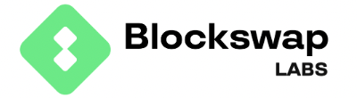

Number of companies: 140 -> Number of jobs: 2431 Last Updated at: 2023-06-07
If you find this page useful please donate ETH/ERC-20* to 0x589a0D87d600a6C6fAa34c491C9e779f434bC51d
*On Etherium, Arbitrum, Optimism or Polygon
|| View as Table ||
Test jobs || Dev jobs || Web3 jobs || Finance jobs || DevOps/SRE jobs || Data jobs || Security jobs
| | KRAKEN | Total Jobs: 27 |
|---|---|---|
| Remote Anywhere | Head of Corporate Compliance | Apply |
| Remote Anywhere | Head of Trading and Market Compliance | Apply |
| Remote Anywhere | Senior Product Designer - Pro | Apply |
| Remote Anywhere | Senior Quantitative Software Engineer - Trading Technologies | Apply |
| Remote Anywhere | Senior Software Engineer - React - Web | Apply |
| Remote Anywhere | Senior Software Engineer - React-Native - Mobile | Apply |
| Remote Anywhere | Staff Software Engineer - React Native - Mobile | Apply |
| Remote Anywhere | Core Infrastructure Engineer - Networking | Apply |
| Remote Anywhere | Core Infrastructure Engineer - Security | Apply |
| Remote Anywhere | Senior Core Infrastructure Engineer - Orchestration | Apply |
| Remote Anywhere | Senior Core Infrastructure Engineer - Performance & Security | Apply |
| Remote United States | Senior Accountant - US | Apply |
| Remote Anywhere | Tax Analyst - Tax Technology | Apply |
| Dublin Remote | Senior Finance Analyst - Ireland | Apply |
| Dublin Remote | Corporate Counsel - EU Governance | Apply |
| Remote Anywhere | Corporate Counsel - US Governance | Apply |
| Remote Anywhere | Senior Corporate and Securities Counsel | Apply |
| Remote Anywhere | Creative Director | Apply |
| Remote Anywhere | Principal HR Business Partner | Apply |
| Remote Anywhere | Senior Project Manager - Organization Design and Workforce Planning | Apply |
| Remote United States | Senior Travel and Events Partner | Apply |
| Remote Anywhere | Senior Product Manager - Equities | Apply |
| Dublin Remote | Chief Risk Officer - Ireland | Apply |
| Dublin Remote | Deputy Money Laundering Reporting Officer - Ireland | Apply |
| Remote Anywhere | Senior Engineering Manager - Atlassian | Apply |
| Remote Anywhere | Senior Manager - Financial Systems | Apply |
| Remote Anywhere | Cloud Security Engineer | Apply |
| ARBITRUMFOUNDATION | Total Jobs: 9 | |
|---|---|---|
| Europe Remote | Research Specialist | Apply |
| Remote Cayman Islands | Head of Finance | Apply |
| Remote Cayman Islands | Community Administrator | Apply |
| Remote Cayman Islands | Head of PR and Communications | Apply |
| Remote Cayman Islands | Operations Manager | Apply |
| Remote Cayman Islands | Don't see the right role for you? Apply here! | Apply |
| Remote Cayman Islands | HR Lead | Apply |
| Remote Cayman Islands | Technical Recruiter | Apply |
| Remote Cayman Islands | Developer Relations Advocate | Apply |
 | CHAINLINK | Total Jobs: 43 |
|---|---|---|
| United States / Remote | Web Designer | Apply |
| United States / Remote | DevOps Engineer, Engineering Operations | Apply |
| United States / Remote | Engineering Manager, Cross-Chain Interoperability Protocol (CCIP) | Apply |
| United States / Remote | Engineering Manager, Verifiable Random Function (VRF) | Apply |
| United States / Remote | Principal Engineer | Apply |
| United States / Remote | Release Engineer | Apply |
| United States / Remote | Senior DevOps Engineer, Engineering Operations | Apply |
| Dublin / Remote | Senior Site Reliability Engineer | Apply |
| United States / Remote | Senior Site Reliability Engineer, Engineering Operations | Apply |
| United States / Remote | Senior Site Reliability Engineer, Node Operations | Apply |
| United States / Remote | Senior Software Engineer - Blockchain Services | Apply |
| United States / Remote | Senior Software Engineer - Cross Chain Interoperability Protocol | Apply |
| United States / Remote | Senior Software Engineer / Data Engineer, Golang | Apply |
| United States / Remote | Senior Software Engineer, Golang | Apply |
| San Francisco / Remote | Senior Software Engineer, Test Tooling | Apply |
| United States / Remote | Site Reliability Engineer, Engineering Operations | Apply |
| United States / Remote | Software Engineer, Blockchain Integrations | Apply |
| Madrid / Remote | Software Engineer, Data Feeds - Data | Apply |
| United States / Remote | Software Engineer, Data Feeds - Product | Apply |
| Berlin / Remote | Software Engineer, Test Tooling | Apply |
| United States / Remote | Staff Site Reliability Engineer - Infrastructure Platform | Apply |
| London / Remote | Staff Software Engineer, Data Feeds - Data | Apply |
| United States / Remote | Accounts Receivable and Revenue Operations Manager | Apply |
| United States / Remote | AR & Revenue Analyst | Apply |
| United States / Remote | Group Treasurer | Apply |
| United States / Remote | Payroll Coordinator | Apply |
| United States / Remote | Senior Tax Analyst | Apply |
| United States / Remote | Tax Manager, International Tax | Apply |
| London / Remote | Treasury Analyst | Apply |
| United States / Remote | Technical Support Analyst (AMERS) | Apply |
| Singapore / Remote | Technical Support Analyst (APAC) | Apply |
| London / Remote | Technical Support Analyst (EMEA) | Apply |
| Singapore / Remote | PR & Communications, APAC | Apply |
| United States / Remote | Senior Business Operations Associate | Apply |
| United States / Remote | Director, Product Management - Blockchain Integrations | Apply |
| United States / Remote | Product Manager, Developer Services | Apply |
| United States / Remote | Senior Data Partnerships Manager | Apply |
| Madrid / Remote | Research Engineer | Apply |
| Zug / Remote | Research Internship | Apply |
| Warsaw / Remote | Cyber Threat Analyst | Apply |
| San Francisco / Remote | Security Engineer - Product Security | Apply |
| Dallas / Remote | Security Response Engineer | Apply |
| San Francisco / Remote | Senior IT Systems Engineer | Apply |
| 0X | Total Jobs: 6 | |
|---|---|---|
| Fully-Remote Available | Senior Software Engineer - Platform Engineering | Apply |
| Fully-Remote Available | Software Engineer - Backend | Apply |
| Fully-Remote Available | Software Engineer - Full-Stack, Matcha | Apply |
| Fully-Remote Available | SRE/ Production Engineer | Apply |
| Remote San Francisco | Product Marketing Manager - 0x | Apply |
| Remote San Francisco | Head of Business Development and Sales | Apply |
| ARCHBLOCK | Total Jobs: 0 |
|---|
 | ETHGLOBAL | Total Jobs: 2 |
|---|---|---|
| – Us & Canada Remote | Full Stack Software Engineer | Apply |
| – Us & Canada Remote | Senior Backend Engineer | Apply |
| MAGIC | Total Jobs: 6 | |
|---|---|---|
| Remote - United States | Director of Engineering, SRE and Platform | Apply |
| Remote - United States | Senior Front End Engineer, Magic Wallet Services | Apply |
| Remote - United States | Communications Manager | Apply |
| Remote - United States | Demand Generation Lead | Apply |
| Remote - United States | Senior Counsel | Apply |
| Remote - United States | Lead Product Manager, Growth | Apply |
 | CHAINSTACK | Total Jobs: 4 |
|---|---|---|
| Remote | Product Analyst | Apply |
| Remote | Senior Python Software Engineer | Apply |
| 1 (Remote) Remote Belgrad | Senior Wordpress Developer | Apply |
| 111 (Remote) Remote Krakow | Software Engineer Team Lead | Apply |
 | MULTIVERSX | Total Jobs: 15 |
|---|---|---|
| Europe | Backend Developer - NodeJS / NestJS | Apply |
| Europe | QA Engineer - backend | Apply |
| Europe | Senior Software Engineer - Cryptography | Apply |
| Europe | Technical writer | Apply |
| Europe | Business development manager | Apply |
| Europe | DevSecOps Engineer | Apply |
| Europe | QA Engineer | Apply |
| Europe | QA Engineer - smart contracts | Apply |
| Europe | Front-End Engineer (React Native) | Apply |
| Europe | Front-End Engineer (React) | Apply |
| Europe | QA Engineer - frontend | Apply |
| Europe Hybrid | Content Writer | Apply |
| Europe Hybrid | Marketing Specialist | Apply |
| Europe | Senior Software Engineer | Apply |
| Cluj-Napoca Hybrid | UI/UX Designer | Apply |
| COINMARKETCAP | Total Jobs: 28 | |
|---|---|---|
| Malaysia Kuala Lumpur | Senior Data Scientist | Apply |
| Indonesia Jakarta | Senior Data Scientist | Apply |
| OTHER Latin America | Senior Web Developer | Apply |
| Taipei Taiwan | Senior QA Engineer | Apply |
| Hong Kong | Senior QA Engineer | Apply |
| Singapore | Senior QA Engineer | Apply |
| United Arab Emirates Dubai | Senior QA Engineer | Apply |
| Hong Kong | Senior iOS Developer | Apply |
| Taipei Taiwan | Senior Data Engineer (Big Data) | Apply |
| Singapore | Senior Data Scientist | Apply |
| Taipei Taiwan | Senior Data Scientist | Apply |
| Vietnam Ho Chi Minh City | Senior Java Engineer | Apply |
| Thailand Bangkok | Senior Web Developer | Apply |
| Vietnam Ho Chi Minh City | Senior Web Developer | Apply |
| Malaysia Kuala Lumpur | Senior Web Developer | Apply |
| Singapore | Senior Web Developer | Apply |
| Taipei Taiwan | Senior Java Engineer | Apply |
| Singapore | Senior Java Engineer | Apply |
| Hong Kong | Senior Java Engineer | Apply |
| United Arab Emirates Dubai | Senior Java Engineer | Apply |
| United Arab Emirates Dubai | Senior Web Developer | Apply |
| Hong Kong | Senior Web Developer | Apply |
| Taipei Taiwan | Senior Web Developer | Apply |
| Hong Kong | Senior Data Scientist | Apply |
| SEA OTHER | Social Media Intern | Apply |
| Thailand Bangkok | Senior Product Manager | Apply |
| Taipei Taiwan | Senior Product Manager | Apply |
| Singapore | Senior Product Manager | Apply |
| EVMOS | Total Jobs: 5 | |
|---|---|---|
| Berlin | Senior Core Engineering Manager | Apply |
| Berlin | Executive / Team Assistant - Berlin | Apply |
| Berlin | Operations Manager | Apply |
| Berlin | Product Designer | Apply |
| Berlin | Software Engineer, Full Stack | Apply |
| ORDERLYNETWORK | Total Jobs: 7 | |
|---|---|---|
| Anywhere | Associate/VP, Partnership | Apply |
| Anywhere | Associate/VP, VIP Clients | Apply |
| Anywhere | Product Manager | Apply |
| Anywhere | Quality Assurance Engineer | Apply |
| Anywhere | Software Engineer, Java | Apply |
| Anywhere | VP, Community/Content | Apply |
| Anywhere | Opportunities at Orderly Network | Apply |
| SPRUCESYSTEMS | Total Jobs: 5 | |
|---|---|---|
| Remote | Developer Relations | Apply |
| Remote | Software Engineer, Android | Apply |
| Remote | Software Engineer, Backend | Apply |
| Remote | Software Engineer, Full-Stack | Apply |
| West Region Remote | Technical Success Manager | Apply |
|  | BLOCKSWAP | Total Jobs: 3 |
|---|---|---|
| London Remote | Blockchain Engineer- Smart Contracts | Apply |
| London Remote | UI Developer (Fullstack) | Apply |
| San Francisco Remote | Product Success Manager | Apply |
 | TESSERA | Total Jobs: 0 |
|---|
 | AXIOMZEN | Total Jobs: 6 |
|---|---|---|
| Us / Canada Remote | Senior Mobile Engineer, iOS (Dapper Mobile) | Apply |
| Us / Canada Remote | Senior Software Engineer in Test | Apply |
| Remote | General Application - Dapper Labs | Apply |
| Us / Canada Remote | Senior Product Manager, Core Wallet & Payments | Apply |
| Us / Canada Remote | Senior Product Designer | Apply |
| Us / Canada Remote | DeFi Lead | Apply |
 | PAXOS | Total Jobs: 36 |
|---|---|---|
| US | Senior Software Engineer – Custody Org | Apply |
| US | Quality Control Program Manager | Apply |
| US | Strategic Initiatives Project Manager | Apply |
| US | Senior Frontend Software Engineer – Regulatory Platform | Apply |
| US | Treasury Analyst | Apply |
| US | Staff Software Engineer – Regulatory Platform | Apply |
| US | Staff Software Engineer, Frontend – Regulatory Platform | Apply |
| US | Staff Software Engineer – DevEX | Apply |
| US | Sr. Staff Software Engineer, Reliability | Apply |
| US | Sr. Staff Site Reliability Engineer | Apply |
| US | Sr. Program Manager – Third Party Risk Management (Banking/Business Partnerships) | Apply |
| US | Sr. Manager – Compliance Process & Program | Apply |
| US | Sr. AML Program Manager | Apply |
| US | Software Engineer – Signing | Apply |
| US | Senior Software Engineer – DevEx | Apply |
| US | Senior Site Reliability Engineer | Apply |
| US | Senior Product Counsel | Apply |
| US | Senior IT Engineer | Apply |
| US | Senior GRC Security Engineer | Apply |
| US | Senior Engineering Manager – Reliability | Apply |
| US | Senior Cloud Security Engineer | Apply |
| US | Senior Accountant, Financial Reporting | Apply |
| US | Senior Accountant, Financial Close | Apply |
| US | Quality Assurance and Testing Program Manager | Apply |
| US | Product Manager – Tokenization | Apply |
| US | Product Manager – Banking Platform | Apply |
| US | Product Manager – Admin Tools | Apply |
| US | Principal Engineer – Paxos Platform | Apply |
| US | People/HR Business Partner | Apply |
| US | Litigation and Employment Senior Counsel | Apply |
| US | Head of People Operations | Apply |
| US | Global Head of Data | Apply |
| US | FP&A Analyst | Apply |
| US | Engineering Manager – Custody | Apply |
| US | Engineering Manager – Cloud Security | Apply |
| US | Blockchain Analytics Investigator | Apply |
| ZORA | Total Jobs: 4 | |
|---|---|---|
| Remote | Backend Engineer | Apply |
| Remote | Senior Backend Engineer | Apply |
| Remote | Senior Frontend Engineer | Apply |
| Remote | Senior Infrastructure Engineer | Apply |
 | FUELLABS | Total Jobs: 8 |
|---|---|---|
| Web3 Remote | Senior Developer Relations Engineer | Apply |
| Web3 Remote | Fraud Proving Engineer | Apply |
| Web3 Remote | Senior Compiler/Language Engineer [Rust/LLVM] | Apply |
| Web3 Remote | Senior Indexer Engineer [Rust] | Apply |
| Web3 Remote | Senior Kubernetes Engineer | Apply |
| Web3 Remote | Senior Protocol Engineer [Rust] | Apply |
| Web3 Remote | Senior Software Security Engineer | Apply |
| Web3 Remote | Community Manager | Apply |
 | HARMONY | Total Jobs: 8 |
|---|---|---|
| Ca / Remote Palo Alto | 1.country Ambassador | Apply |
| Ca Palo Alto On-Site | Business and Operations Associate | Apply |
| Ca Palo Alto On-Site | Business Development Manager | Apply |
| Ca Palo Alto On-Site | Product Manager | Apply |
| Ca Palo Alto On-Site | Engineering Lead | Apply |
| Ca Palo Alto On-Site | Frontend Engineer | Apply |
| Ca Palo Alto On-Site | Network Engineer | Apply |
| Ca Palo Alto On-Site | Systems Engineer | Apply |
 | WINTERMUTE | Total Jobs: 15 |
|---|---|---|
| London / Singapore / Remote Hybrid | Open roles to rebuild the crypto industry | Apply |
| London Hybrid | DeFi - Open Application | Apply |
| London Hybrid | Financial Accountant | Apply |
| Hybrid Singapore | Risk Analyst | Apply |
| London Hybrid | C++ Quant Developer | Apply |
| London Hybrid | C++ Trading Platform Developer | Apply |
| London Hybrid | Core Developer (Python) | Apply |
| London | Software Engineer (Python) | Apply |
| London Hybrid | Algorithmic Trader | Apply |
| Hybrid Singapore | Algorithmic Trader | Apply |
| Hybrid Singapore | Graduate Algorithmic Trader 2023 | Apply |
| London On-Site | Graduate Algorithmic Trader 2023 | Apply |
| London Hybrid | Options Trader | Apply |
| London Hybrid | Trading Assistant | Apply |
| Hybrid Singapore | Trading Assistant | Apply |
| BITFURY | Total Jobs: 7 | |
|---|---|---|
| United Arab Emirates Dubai | Sales Executive (Eastern Europe & MENA) - Crystal Blockchain (Remote) | Apply |
| Masovian Voivodeship Warsaw Poland | Sales Executive (Eastern Europe & MENA) - Crystal Blockchain (Remote) | Apply |
| Tallinn Estonia Harju | Sales Executive (Eastern Europe & MENA) - Crystal Blockchain (Remote) | Apply |
| Masovian Voivodeship Warsaw Poland | Sales Operations Specialist - Crystal Blockchain (Remote) | Apply |
| Belgrade Serbia | Sales Operations Specialist - Crystal Blockchain (Remote) | Apply |
| Amsterdam Netherlands North Holland | Sales Operations Specialist - Crystal Blockchain (Remote) | Apply |
| England United Kingdom London | Sales Operations Specialist - Crystal Blockchain (Remote) | Apply |
 | BITCOIN | Total Jobs: 4 |
|---|---|---|
| Remote | Backend Engineer, TradFi | Apply |
| EMEA | Full Stack Developer, TradFi | Apply |
| Malta | Fullstack Developer, Games | Apply |
| EMEA | Senior Casino Affiliate manager | Apply |
 | CEXIO | Total Jobs: 6 |
|---|---|---|
| Lisbon Portugal | Database Administrator | Apply |
| Lisbon Portugal | DevOps Engineer | Apply |
| Remote | DevOps Engineer | Apply |
| Remote Lisbon - (Remote) | Lead ETL/PostgreSQL Developer | Apply |
| Vilnius Remote Luthuania (Remote) | MLRO LIthuania | Apply |
| United States (Remote) Remote | Regulatory Reporting Officer | Apply |
 | CIRCLE | Total Jobs: 133 |
|---|---|---|
| Singapore | Director, Customer Success, APAC | Apply |
| Singapore | Senior Solutions Engineer, APAC | Apply |
| Boston - remote first in US | Manager, Data Engineering | Apply |
| New York City - remote first in US | Manager, Data Engineering | Apply |
| Los Angeles - remote first in US | Manager, Data Engineering | Apply |
| Atlanta - remote first in US | Manager, Data Engineering | Apply |
| San Francisco - remote first in US | Manager, Data Engineering | Apply |
| Austin - remote first in US | Manager, Data Engineering | Apply |
| Chicago - remote first in US | Manager, Data Engineering | Apply |
| Washington D.C. - remote first in US | Manager, Data Engineering | Apply |
| Seattle - remote first in US | Manager, Data Engineering | Apply |
| Phoenix - remote first in US | Manager, Data Engineering | Apply |
| Salt Lake City - remote first in US | Manager, Data Engineering | Apply |
| Miami - remote first in US | Manager, Data Engineering | Apply |
| New York City - remote first in US | Manager, Software Engineering | Apply |
| Austin - remote first in US | Manager, Software Engineering | Apply |
| Washington D.C. - remote first in US | Manager, Software Engineering | Apply |
| Vancouver - remote first in CAN | Manager, Software Engineering | Apply |
| San Francisco - remote first in US | Manager, Software Engineering | Apply |
| Toronto - remote first in CAN | Manager, Software Engineering | Apply |
| Chicago - remote first in US | Senior Data Engineer | Apply |
| Los Angeles - remote first in US | Senior Data Engineer | Apply |
| San Francisco - remote first in US | Senior Data Engineer | Apply |
| New York City - remote first in US | Senior Data Engineer | Apply |
| Austin - remote first in US | Senior Data Engineer | Apply |
| Boston - remote first in US | Senior Data Engineer | Apply |
| Atlanta - remote first in US | Senior Data Engineer | Apply |
| Phoenix - remote first in US | Senior Data Engineer | Apply |
| Seattle - remote first in US | Senior Data Engineer | Apply |
| Washington D.C. - remote first in US | Senior Data Engineer | Apply |
| Salt Lake City - remote first in US | Senior Data Engineer | Apply |
| Miami - remote first in US | Senior Data Engineer | Apply |
| Miami - remote first in US | Senior Software Engineer | Apply |
| Chicago - remote first in US | Senior Software Engineer | Apply |
| Austin - remote first in US | Senior Software Engineer | Apply |
| Phoenix - remote first in US | Senior Software Engineer | Apply |
| Los Angeles - remote first in US | Senior Software Engineer | Apply |
| Seattle - remote first in US | Senior Software Engineer | Apply |
| Salt Lake City - remote first in US | Senior Software Engineer | Apply |
| Boston - remote first in US | Senior Software Engineer | Apply |
| Atlanta - remote first in US | Senior Software Engineer | Apply |
| New York City - remote first in US | Senior Software Engineer | Apply |
| San Francisco - remote first in US | Senior Software Engineer | Apply |
| Washington D.C. - remote first in US | Senior Software Engineer | Apply |
| Taipei City - will also consider remote in Taiwan | Senior Software Engineer, Backend, APAC | Apply |
| Taipei City - will also consider remote in Taiwan | Senior Software Engineer, Blockchain | Apply |
| Taipei City - will consider remote in TW | Accountant | Apply |
| New York City - remote first in US | Accounting Data, Reporting & Automation Manager | Apply |
| Washington D.C. - remote first in US | Accounting Data, Reporting & Automation Manager | Apply |
| Seattle - remote first in US | Accounting Data, Reporting & Automation Manager | Apply |
| Phoenix - remote first in US | Accounting Data, Reporting & Automation Manager | Apply |
| Miami - remote first in US | Accounting Data, Reporting & Automation Manager | Apply |
| San Francisco - remote first in US | Accounting Data, Reporting & Automation Manager | Apply |
| Salt Lake City - remote first in US | Accounting Data, Reporting & Automation Manager | Apply |
| Boston - remote first in US | Accounting Data, Reporting & Automation Manager | Apply |
| Austin - remote first in US | Accounting Data, Reporting & Automation Manager | Apply |
| Atlanta - remote first in US | Accounting Data, Reporting & Automation Manager | Apply |
| Chicago - remote first in US | Accounting Data, Reporting & Automation Manager | Apply |
| Los Angeles - remote first in US | Accounting Data, Reporting & Automation Manager | Apply |
| Phoenix - remote first in US | Senior Accountant, Stablecoin Assets and Interest Revenue | Apply |
| Chicago - remote first in US | Senior Accountant, Stablecoin Assets and Interest Revenue | Apply |
| Salt Lake City - remote first in US | Senior Accountant, Stablecoin Assets and Interest Revenue | Apply |
| Miami - remote first in US | Senior Accountant, Stablecoin Assets and Interest Revenue | Apply |
| San Francisco - remote first in US | Senior Accountant, Stablecoin Assets and Interest Revenue | Apply |
| Boston - remote first in US | Senior Accountant, Stablecoin Assets and Interest Revenue | Apply |
| Seattle - remote first in US | Senior Accountant, Stablecoin Assets and Interest Revenue | Apply |
| Los Angeles - remote first in US | Senior Accountant, Stablecoin Assets and Interest Revenue | Apply |
| Washington D.C. - remote first in US | Senior Accountant, Stablecoin Assets and Interest Revenue | Apply |
| New York City - remote first in US | Senior Accountant, Stablecoin Assets and Interest Revenue | Apply |
| Austin - remote first in US | Senior Accountant, Stablecoin Assets and Interest Revenue | Apply |
| Atlanta - remote first in US | Senior Accountant, Stablecoin Assets and Interest Revenue | Apply |
| Washington D.C. - remote first in US | Senior Manager, Accounting | Apply |
| San Francisco - remote first in US | Senior Manager, Accounting | Apply |
| Phoenix - remote first in US | Senior Manager, Accounting | Apply |
| Seattle - remote first in US | Senior Manager, Accounting | Apply |
| New York City - remote first in US | Senior Manager, Accounting | Apply |
| Miami - remote first in US | Senior Manager, Accounting | Apply |
| Salt Lake City - remote first in US | Senior Manager, Accounting | Apply |
| Atlanta - remote first in US | Senior Manager, Accounting | Apply |
| Austin - remote first in US | Senior Manager, Accounting | Apply |
| Boston - remote first in US | Senior Manager, Accounting | Apply |
| Chicago - remote first in US | Senior Manager, Accounting | Apply |
| Los Angeles - remote first in US | Senior Manager, Accounting | Apply |
| Austin - remote first in US | Corporate Counsel | Apply |
| Phoenix - remote first in US | Corporate Counsel | Apply |
| Salt Lake City - remote first in US | Corporate Counsel | Apply |
| Washington D.C. - remote first in US | Corporate Counsel | Apply |
| Seattle - remote first in US | Corporate Counsel | Apply |
| Chicago - remote first in US | Corporate Counsel | Apply |
| Miami - remote first in US | Corporate Counsel | Apply |
| Los Angeles - remote first in US | Corporate Counsel | Apply |
| Atlanta - remote first in US | Corporate Counsel | Apply |
| San Francisco - remote first in US | Corporate Counsel | Apply |
| New York City - remote first in US | Corporate Counsel | Apply |
| Boston - remote first in US | Corporate Counsel | Apply |
| Los Angeles - remote first in US | Senior Manager, Product Marketing, Business Banking | Apply |
| San Francisco - remote first in US | Senior Manager, Product Marketing, Business Banking | Apply |
| Salt Lake City - remote first in US | Senior Manager, Product Marketing, Business Banking | Apply |
| Phoenix - remote first in US | Senior Manager, Product Marketing, Business Banking | Apply |
| Washington D.C. - remote first in US | Senior Manager, Product Marketing, Business Banking | Apply |
| Seattle - remote first in US | Senior Manager, Product Marketing, Business Banking | Apply |
| Miami - remote first in US | Senior Manager, Product Marketing, Business Banking | Apply |
| Chicago - remote first in US | Senior Manager, Product Marketing, Business Banking | Apply |
| Atlanta - remote first in US | Senior Manager, Product Marketing, Business Banking | Apply |
| Austin - remote first in US | Senior Manager, Product Marketing, Business Banking | Apply |
| New York City - remote first in US | Senior Manager, Product Marketing, Business Banking | Apply |
| Boston - remote first in US | Senior Manager, Product Marketing, Business Banking | Apply |
| Boston - remote first in US | Director, Cloud Security | Apply |
| Atlanta - remote first in US | Director, Cloud Security | Apply |
| Washington D.C. - remote first in US | Director, Cloud Security | Apply |
| San Francisco - remote first in US | Director, Cloud Security | Apply |
| Austin - remote first in US | Director, Cloud Security | Apply |
| Seattle - remote first in US | Director, Cloud Security | Apply |
| New York City - remote first in US | Director, Cloud Security | Apply |
| Salt Lake City - remote first in US | Director, Cloud Security | Apply |
| Miami - remote first in US | Director, Cloud Security | Apply |
| Los Angeles - remote first in US | Director, Cloud Security | Apply |
| Phoenix - remote first in US | Director, Cloud Security | Apply |
| Chicago - remote first in US | Director, Cloud Security | Apply |
| Taipei City - will also consider remote in Taiwan | Lead Security Engineer, Product Security (Taiwan) | Apply |
| Atlanta - remote first in US | Technology Risk Manager | Apply |
| San Francisco - remote first in US | Technology Risk Manager | Apply |
| Los Angeles - remote first in US | Technology Risk Manager | Apply |
| Washington D.C. - remote first in US | Technology Risk Manager | Apply |
| Chicago - remote first in US | Technology Risk Manager | Apply |
| Miami - remote first in US | Technology Risk Manager | Apply |
| Seattle - remote first in US | Technology Risk Manager | Apply |
| Phoenix - remote first in US | Technology Risk Manager | Apply |
| New York City - remote first in US | Technology Risk Manager | Apply |
| Boston - remote first in US | Technology Risk Manager | Apply |
| Salt Lake City - remote first in US | Technology Risk Manager | Apply |
| Austin - remote first in US | Technology Risk Manager | Apply |
| Taipei City - will also consider remote in Taiwan | Senior Site Reliability Engineer | Apply |
| STATUS | Total Jobs: 22 | |
|---|---|---|
| Remote (Worldwide) | Digital Communications Lead | Apply |
| Remote (Worldwide) | Digital Designer | Apply |
| Remote (Worldwide) | Events Manager | Apply |
| Remote (Worldwide) | Studio Design Lead | Apply |
| Remote (Worldwide) | Senior React Native UI Developer | Apply |
| Anywhere (Remote) | Program Manager | Apply |
| Remote (Worldwide) | Test Automation Engineer | Apply |
| Remote (Worldwide) | Codex Student Program | Apply |
| Remote (Worldwide) | Distributed Systems Engineer | Apply |
| Remote (Worldwide) | Senior Rust Developer | Apply |
| Remote (Worldwide) | Distributed Systems Engineer | Apply |
| Remote (Worldwide) | Nim Software Engineer | Apply |
| Remote (Worldwide) | Protocol Engineer | Apply |
| Worldwide Remote | Protocol Research Engineer (Protocol Incentivization) | Apply |
| Worldwide Remote | Protocol Researcher (Distributed Systems) | Apply |
| Remote (Worldwide) | Zero Knowledge Research Engineer | Apply |
| Remote (Worldwide) | Senior System Engineer | Apply |
| Remote (Worldwide) | Software Engineer (Golang) | Apply |
| Remote (Worldwide) | Algorithm Developer (Crypto Market Making) | Apply |
| Remote (Worldwide) | Legal Associate | Apply |
| Remote (Worldwide) | Business Analyst | Apply |
| Remote (Worldwide) | Security Lead | Apply |
| OKX | Total Jobs: 267 | |
|---|---|---|
| Hong Kong | Administration Officer | Apply |
| Malaysia | Admin Manager | Apply |
| Singapore Central | Group Indirect Procurement Manager | Apply |
| Middle East/Africa | Office Administration Manager (Remote) | Apply |
| Hong Kong | Senior Administrative Manager (Admin COE) | Apply |
| Singapore Central | Product Manager (Data) | Apply |
| Singapore Central | Strategic Communications Manager | Apply |
| Turkey | Finance Manager (Turkey) | Apply |
| Hong Kong | Finance System Manager | Apply |
| Hong Kong | Senior Finance and Accounting Manager | Apply |
| South America (Remote) | Senior Finance Manager, Brazil | Apply |
| Singapore Central | Expert, Global ER Policy | Apply |
| Hong Kong | Expert, Global ER Policy | Apply |
| Singapore Central | Expert, Organization Development & Talent Development | Apply |
| San Jose California United States | Global Senior Manager (Shared Services Center) | Apply |
| Turkey | HR Manager (Turkey) | Apply |
| Hong Kong | HR Operations Manager (People Analytics) | Apply |
| Singapore Central | Senior/Expert, Global Leadership/Talent Development | Apply |
| Malaysia | Senior HR Operations Executive | Apply |
| Singapore Central | Senior Manager, C&B Operations (LTI Operations) | Apply |
| Hong Kong | Senior Manager, C&B Operations (LTI Operations) | Apply |
| Singapore Central | Senior Manager, HRBP (Product & Engineering) | Apply |
| Singapore Central | Senior Manager, HR Data Analytics (SSC) | Apply |
| Hong Kong | Senior TAO Specialist | Apply |
| San Jose California United States | Senior Training and Development Manager, Leadership | Apply |
| Malaysia | Talent Acquisition Specialist | Apply |
| Singapore Central | Total Rewards Expert | Apply |
| San Jose California United States | Total Rewards Senior Manager | Apply |
| Malaysia | HRBP | Apply |
| Singapore Central | Leadership Growth Expert | Apply |
| Hong Kong | Senior Manager/Expert, Leadership Management | Apply |
| Hong Kong | Senior Manager (Project & Data Management) | Apply |
| Malaysia | AML Operations Manager | Apply |
| Malaysia | AML Operations Specialist | Apply |
| Turkey | Associate General Counsel | Apply |
| Bahamas New Providence | Associate General Counsel, Bahamas | Apply |
| Americas | Chief Compliance Officer, OKX Canada | Apply |
| San Jose California United States | Compliance Manager, Risk Assessments | Apply |
| Malaysia | Customer Due Diligence Team Lead | Apply |
| San Jose California United States | Global Chief Compliance Officer | Apply |
| Malta Gzira | Head of Compliance, European Derivative Products, OKX | Apply |
| Western Europe (Remote) | Head of Compliance, OKX, EMEA | Apply |
| Western Europe (Remote) | Head of Risk, Gibraltar | Apply |
| Dublin Ireland | Head of Risk, Ireland | Apply |
| Western Europe (Remote) | Head of Risk, UK | Apply |
| Singapore Central | Legal Counsel | Apply |
| Malaysia | Senior Legal Counsel | Apply |
| Malaysia | Senior Manager, Legal Operations | Apply |
| Malaysia | Data Analyst (Customer Service Industry, Mandarin Support) | Apply |
| Malaysia | Head of Learning & Development and Quality Assurance (LDQA) | Apply |
| Malaysia | L&D and QA (Vietnamese / Japanese / Tagalog Speaker) | Apply |
| Malaysia | QA Manager (Mandarin Support) | Apply |
| Malaysia | Specialist, Quality Assurance | Apply |
| Malaysia | Specialist, Training & Development (Mandarin Speaker) | Apply |
| Malaysia | Strategic Content Specialist | Apply |
| Malaysia | Customer Service Agent (English) | Apply |
| Malaysia | Customer Service Agent (Japanese Speaker) | Apply |
| Malaysia | Customer Service Agent (Korean, Japanese, Vietnamese, Tagalog) | Apply |
| Malaysia | Customer Service Agent (Portuguese) | Apply |
| Malaysia | Customer Service Agent (Social Media) | Apply |
| Malaysia | Customer Service Agent (Spanish) | Apply |
| Malaysia | Customer Service Team Lead | Apply |
| Malaysia | Customer Service Team Lead (Korean / Japanese / Mandarin) | Apply |
| Malaysia | Customer Service Trainer | Apply |
| Malaysia | Escalation Specialist | Apply |
| Middle East/Africa | Operational Excellence Specialist (Remote) | Apply |
| Malaysia | Robotics Process Automation (RPA) Specialist | Apply |
| Malaysia | Senior TNT Specialist | Apply |
| Malaysia | Specialist, P2P Dispute | Apply |
| Malaysia | Specialist, P2P Dispute (Arabic Speaker) | Apply |
| Malaysia | Workforce Management Specialist (Mandarin Support) | Apply |
| Malaysia | 中文客服代表 Senior Agent, Customer Service (Mandarin Speaker) | Apply |
| Malaysia | Risk Operations Manager | Apply |
| Malaysia | Specialist, Fraud Risk Ops | Apply |
| Malaysia | Transaction Monitoring Manager | Apply |
| Malaysia | Senior Associate, Legal Operations | Apply |
| Malaysia | Senior Customer Due Diligence Manager | Apply |
| Malaysia | Senior Manager, Sanction Operations | Apply |
| Malaysia | Specialist, Customer Due Diligence | Apply |
| Singapore Central | Affiliate Operations Manager | Apply |
| Americas | Director of PR, USA | Apply |
| Australia (Remote) | Finance Manager - Australia | Apply |
| Turkey | General Manager (MENA) | Apply |
| Europe | General Manager, UK | Apply |
| Malaysia | Head of Institutional Support | Apply |
| Hong Kong | Investment Manager | Apply |
| Americas | Investment Manager | Apply |
| Hong Kong | Paid Ads Development Manager (Hong Kong) | Apply |
| Singapore Central | Product Marketing Director - P2P (Products) | Apply |
| Americas | Public Relations Manager | Apply |
| Singapore Central | Senior BD Operations Manager | Apply |
| Singapore Central | Senior Finance IT Manager | Apply |
| Malaysia | Specialist, Institutional Support | Apply |
| Americas | Sr. Business Development Manager - Listings | Apply |
| Singapore Central | Business Analyst | Apply |
| South Asia (Remote) | Marketing Manager, Taiwan | Apply |
| Southeast Asia (Remote) | Paid ads Development Manager (Global) | Apply |
| Southeast Asia (Remote) | Paid Advertisement Development Manager, Thailand | Apply |
| Hong Kong | Social Media Director | Apply |
| Singapore Central | Social Media Lead | Apply |
| Singapore Central | Wallet Business Manager | Apply |
| Singapore Central | Post Listing Manager | Apply |
| Turkey | Operations Manager, Turkey | Apply |
| San Jose California United States | Sr. Manager, Social Media & Influencer Marketing | Apply |
| North Asia (Remote) | Affiliate Business Development Manager | Apply |
| Europe | Affiliate Business Development Manager (Europe) | Apply |
| Asia Pacific | Affiliate Business Development Manager, India | Apply |
| Asia Pacific | Affiliate Business Development Manager, Philippines | Apply |
| Asia Pacific | Affiliate Business Development Manager Taiwan | Apply |
| Turkey | Affiliate Business Development Manager (Turkey) | Apply |
| Southeast Asia (Remote) | Institutional Business Development Manager | Apply |
| South America (Remote) | Liquidity Partnership Business Development Manager - LATAM | Apply |
| Europe | Senior Affiliate Business Development Manager (CIS) | Apply |
| South America (Remote) | Senior Affiliate Business Development Manager (Latam) | Apply |
| Dubai | Senior API Support Engineer - EU | Apply |
| Hong Kong | (Senior) Manager, Structured Product BD | Apply |
| Europe | Content Manager (Brand Writer) | Apply |
| Europe | Head of Content | Apply |
| Turkey | Paid Ads Business Development Manager (Turkey) | Apply |
| Singapore Central | Product Content Creator (CeFi) | Apply |
| England United Kingdom London | Product Content Creator (Exchange) | Apply |
| San Jose California United States | Product Marketing Director, P2P Products | Apply |
| Singapore Central | Product Marketing Lead, Defi | Apply |
| Europe | (Senior) Brand Writer | Apply |
| Europe | Senior Content Manager (Trader Writer) | Apply |
| Singapore Central | Senior Social Media Manager | Apply |
| Dubai | Sr. Manager, Social Media & Influencer Marketing - UAE | Apply |
| Europe | Sr. Manager, Social Media & Influencer Marketing - UK | Apply |
| San Jose California United States | Web3 Content Strategist | Apply |
| Southeast Asia (Remote) | Country Launcher | Apply |
| San Jose California United States | Lifecycle Marketing Manager | Apply |
| Singapore Central | Lifecycle Marketing Manager | Apply |
| Bahamas New Providence | Senior Operations Manager | Apply |
| Europe | Institutional Business Development Manager, CIS | Apply |
| Europe | Institutional Business Development Manager, Europe | Apply |
| Hong Kong | Business Analyst - Quant Platform | Apply |
| Singapore Central | Senior Manager, Operations | Apply |
| Malaysia | IT Security Operations | Apply |
| Singapore Central | KYT Business Development Manager | Apply |
| Singapore Central | Research Operations Manager | Apply |
| Singapore Central | Senior Product Manager, Liquidity | Apply |
| Singapore Central | Senior Product Manager, Listing | Apply |
| Singapore Central | Senior Product Manager, Trading Experience (Candlestick) | Apply |
| Singapore Central | Senior Product Manager, Web3 Wallet | Apply |
| Singapore Central | User Experience Researcher | Apply |
| San Jose California United States | UX Researcher - Web3 | Apply |
| Hong Kong | Agile Coach | Apply |
| Singapore Central | AI Scientist/Engineer | Apply |
| Singapore Central | Android Developer | Apply |
| Singapore Central | Data Engineer | Apply |
| Singapore Central | DevOps platform development engineer | Apply |
| San Jose California United States | Director of Engineering, Fiat Gateway | Apply |
| San Jose California United States | Director of Engineering, Risk | Apply |
| Singapore Central | Engineering Director | Apply |
| Hong Kong | Engineering Lead - Stability Architecture | Apply |
| San Jose California United States | Engineering Manager, DevOps | Apply |
| Hong Kong | Engineer - Smart Contract-analysis(Java) | Apply |
| Singapore Central | Frontend Developer | Apply |
| Hong Kong | Infrastructure Development Engineer | Apply |
| Singapore Central | iOS Developer | Apply |
| San Jose California United States | IT Support Engineer | Apply |
| Malta Gzira | IT Support Engineer | Apply |
| Singapore Central | Java Software Engineer -Prime Team | Apply |
| Singapore Central | Lead/Senior Software Engineer - Java (Exchange Platform - Trading Services) | Apply |
| San Jose California United States | Mobile Engineer, iOS | Apply |
| San Jose California United States | Mobile Engineer (iOS) - Retail Investor Experience | Apply |
| San Jose California United States | Principal Site Reliability Engineer | Apply |
| Singapore Central | Python Developer (Quant Platform - Risk Services) | Apply |
| Singapore Central | Quant Platform Developer | Apply |
| Singapore Central | Senior Blockchain Engineer(Rust/Go) | Apply |
| Hong Kong | Senior Engineer (Big data) | Apply |
| Hong Kong | Senior Engineer - Blockchain Data Platform(Java) | Apply |
| Hong Kong | Senior Engineer - Blockchain Wallet(Golang) | Apply |
| Hong Kong | Senior Engineer - Frontend | Apply |
| Hong Kong | Senior Engineer – Java (Blockchain Asset) | Apply |
| Hong Kong | Senior Engineer - Java (Defi - DEX) | Apply |
| Hong Kong | Senior Engineer (On-Chain AML) | Apply |
| Hong Kong | Senior Engineer - Zero-Knowledge Proof(ZKP) | Apply |
| Singapore Central | Senior Java Engineer - DeFi Earn Team | Apply |
| Singapore Central | Senior/Lead Data Engineer - Legal and Compliance | Apply |
| Hong Kong | Senior Principal Engineer - Architecture | Apply |
| San Jose California United States | Senior Software Engineer, Fiat Gateway | Apply |
| Hong Kong | (Senior) Software Engineer – Mobile Developer (Android/iOS) | Apply |
| San Jose California United States | Senior Software Engineer, Payments | Apply |
| San Jose California United States | Senior Software Engineer, Risk | Apply |
| Hong Kong | Senior Software Quality Assurance Engineer | Apply |
| San Jose California United States | Senior SRE Engineer | Apply |
| Singapore Central | Senior / Staff Software Engineer (Java) | Apply |
| San Jose California United States | Senior Staff Software Engineer, Payments | Apply |
| Singapore Central | Site Reliability Engineer (CI/CD) | Apply |
| Singapore Central | Site Reliability Engineer - Stability Architecture | Apply |
| Singapore Central | Site Reliability Software Engineer (Java & Observability) | Apply |
| San Jose California United States | Software Engineer, Fiat Gateway | Apply |
| Singapore Central | Software Engineer - Financial Product | Apply |
| Hong Kong | Software Engineer - Java (Asset & Custody) | Apply |
| Hong Kong | Software Engineer - Java (Exchange Platform - Financial Product) | Apply |
| Singapore Central | Software Engineer - Java (Exchange Platform - Middle Platform) | Apply |
| Hong Kong | Software Engineer - Java (Exchange Platform - Prime Services) | Apply |
| Hong Kong | Software Engineer - Java (Exchange Platform - Trading Services) | Apply |
| Hong Kong | Software Engineer - Java (Quant Platform - Data Services) | Apply |
| Hong Kong | Software Engineer - Java (Quant Platform - Defi) | Apply |
| Hong Kong | Software Engineer - Java (Quant Platform - Liquidity Management) | Apply |
| Hong Kong | Software Engineer - Java (Quant Platform - Trading Services) | Apply |
| Hong Kong | Software Engineer - Python (Quant Platform - Data Services/ HFT Service) | Apply |
| San Jose California United States | Software Engineer, Risk | Apply |
| San Jose California United States | Staff Software Engineer, Fiat Gateway | Apply |
| Hong Kong | Quantitative Analyst | Apply |
| Hong Kong | Software Engineer - Java/Python (Liquidity Management - DeFi Services) | Apply |
| Singapore Central | APAC Head of Content Design | Apply |
| Hong Kong | Content Designer - Technical Writing | Apply |
| Hong Kong | Content Designer - UX Writing | Apply |
| Hong Kong | Content Designer - Web3 UX Writing | Apply |
| San Jose California United States | Design Systems Manager | Apply |
| Singapore Central | Junior UX Writer | Apply |
| Hong Kong | Product Designer | Apply |
| Singapore Central | Product Designer - Digital Asset Transfers | Apply |
| Singapore Central | Senior Content Designer | Apply |
| San Jose California United States | Senior Product Designer | Apply |
| Singapore Central | Senior Product Designer - Growth | Apply |
| Hong Kong | UX Researcher | Apply |
| Hong Kong | Data Analyst-Trading team | Apply |
| Singapore Central | Lead Product Manager - Trading | Apply |
| Hong Kong | Principal Product Manager - Account ( User Center ) | Apply |
| Hong Kong | Principal Product Manager – (Defi- Web3 Data Platform) | Apply |
| Hong Kong | Principal Product Manager -Yield | Apply |
| San Jose California United States | Principle Product Manager - Trading | Apply |
| Singapore Central | Product Director, Compliance | Apply |
| Singapore Central | Product Lead, Web3 Growth | Apply |
| San Jose California United States | Product Manager Director - Trading | Apply |
| Singapore Central | Product Manager, Trading Experience (Trade Journal) | Apply |
| Singapore Central | Senior Data Analyst, Trading | Apply |
| Singapore Central | Senior Data Product Manager, Trading Experience | Apply |
| Singapore Central | Senior Product Data Analyst, Compliance | Apply |
| Hong Kong | (Senior) Product Manager - API | Apply |
| Singapore Central | Senior Product Manager, API & SDK (Oklink, Web3) | Apply |
| Singapore Central | Senior Product Manager, Blockchain Security | Apply |
| Singapore Central | Senior Product Manager, Chatbot | Apply |
| Singapore Central | Senior Product Manager, Compliance | Apply |
| Hong Kong | (Senior) Product Manager — Customer Experience（Earn ） | Apply |
| Singapore Central | Senior Product Manager, Customer Lifecycle | Apply |
| Hong Kong | (Senior) Product Manager - Defi DEX (Trading) | Apply |
| Hong Kong | (Senior)Product Manager – (Defi- Marketplace) | Apply |
| Singapore Central | Senior Product Manager, Defi - NFT Application | Apply |
| Hong Kong | (Senior)Product Manager – (Defi- Web3 DEX) | Apply |
| Hong Kong | (Senior)Product Manager – (Defi- Web3 Wallet) | Apply |
| Singapore Central | Senior Product Manager, DEX | Apply |
| Hong Kong | (Senior) Product Manager — Financial | Apply |
| Hong Kong | (Senior) Product Manager — Institutions | Apply |
| Hong Kong | Senior Product Manager, Liquidity | Apply |
| Hong Kong | Senior Product Manager, Listing | Apply |
| Hong Kong | (Senior) Product Manager — Loan | Apply |
| Hong Kong | (Senior) Product Manager — Platform Asset | Apply |
| Hong Kong | (Senior) Product Manager/ Principal Product Manager - Compliance | Apply |
| San Jose California United States | Senior Product Manager - Recommendation - Customer Lifecycle | Apply |
| Hong Kong | Senior Product Manager (Staking) | Apply |
| Singapore Central | Senior Product Manager, Support | Apply |
| Hong Kong | (Senior) Product Manager - Trading Experience | Apply |
| Singapore Central | Senior Product Manager, Trading Experience | Apply |
| Hong Kong | (Senior) Product Manager - Trading Experience (Advanced Traders) | Apply |
| Singapore Central | Senior Product Manager, Trading Experience (Order & Execution) | Apply |
| Singapore Central | Senior Product Manager, Trading Infrastructure | Apply |
| Singapore Central | Senior SEO Specialist | Apply |
| San Jose California United States | Sr Product Manager - Globalization Platform and Tools | Apply |
| San Jose California United States | Sr Product Manager - Payment | Apply |
| San Jose California United States | Sr Product Manager - Payment Fiat Experience | Apply |
| San Jose California United States | Sr Product Manager - Risk | Apply |
| San Jose California United States | Sr Product Manager - Web3 Global Growth | Apply |
 | BITTREX | Total Jobs: 3 |
|---|---|---|
| Remote | Join Our Talent Community - Engineering | Apply |
| Remote | Lead Azure DevOps Engineer | Apply |
| Remote | Senior Backend Software Engineer (Blockchain Integration, Node.js) | Apply |
 | KAIKO | Total Jobs: 4 |
|---|---|---|
| Paris Hybrid | FP&A Analyst - Intern | Apply |
| Paris Hybrid | Events and Communication Intern | Apply |
| Paris On-Site | HR and Office Administrator - Apprentice | Apply |
| All Locations Hybrid | Spontaneous Application - Come As You Are | Apply |
| BITMEX | Total Jobs: 16 | |
|---|---|---|
| Singapore | Relationship Manager (Corporate Clients) | Apply |
| Hong Kong | Digital Editor | Apply |
| Hong Kong | Senior Data Engineer | Apply |
| Singapore | Senior Data Engineer | Apply |
| Remote - Europe | Principal Detection & Response Engineer | Apply |
| Hong Kong | Principal Detection & Response Engineer | Apply |
| Remote - Europe | Senior Detection and Response Engineer, Central Europe | Apply |
| Remote - Asia | Senior DevSecOps Engineer | Apply |
| Hong Kong | Senior DevSecOps Engineer | Apply |
| Singapore | Senior DevSecOps Engineer | Apply |
| Hong Kong | Trading Technology Engineer | Apply |
| Remote - Europe | Trading Technology Engineer | Apply |
| Singapore | Trading Technology Engineer | Apply |
| Hong Kong | Senior UX/UI Designer | Apply |
| Remote - Asia | Senior UX/UI Designer | Apply |
| Singapore | Senior UX/UI Designer | Apply |
| BITGO | Total Jobs: 17 | |
|---|---|---|
| Palo Alto | Cryptographer (TSS/MPC) | Apply |
| India Bengaluru | Engineering Manager, Blockchain | Apply |
| Bangalore | Frontend Engineer | Apply |
| Bangalore | Senior Data Engineer | Apply |
| Bangalore | Senior Infrastructure Engineer - DevOps India | Apply |
| India Karnataka Bangaluru | Senior Software Engineer, India | Apply |
| United States | Senior Counsel, Commercial and Product | Apply |
| Ny New York | Product Marketing Manager | Apply |
| Palo Alto | Senior Product Marketing Manager | Apply |
| Palo Alto Ca | Director of Design | Apply |
| Bangalore | Product Manager | Apply |
| Palo Alto | Senior Product Designer | Apply |
| Frankfurt | AML Analyst (Germany) | Apply |
| Palo Alto | Third Party Risk Management & Procurement (Manager/Sr. Manager) | Apply |
| New York | Third Party Risk Management & Procurement (Manager/Sr. Manager) | Apply |
| Sioux Falls | Third Party Risk Management & Procurement (Manager/Sr. Manager) | Apply |
| Bangalore | Solutions Engineer | Apply |
| BITPANDA | Total Jobs: 35 | |
|---|---|---|
| Vienna Austria | Senior Specialist, Partnerships & Onboarding | Apply |
| Vienna Austria | Affiliate Account Manager | Apply |
| Berlin Germany | Affiliate Account Manager | Apply |
| Berlin Germany | (Sr.) Content Manager - DACH | Apply |
| Vienna Austria | Accounting Associate | Apply |
| Vienna Austria | Regulatory Reporting Specialist | Apply |
| Berlin Germany | Regulatory Reporting Specialist | Apply |
| England United Kingdom London | Money Laundering Reporting Officer, UK | Apply |
| Berlin Germany | Payroll Specialist | Apply |
| Amsterdam Netherlands North Holland | Payroll Specialist | Apply |
| Vienna Austria | Payroll Specialist | Apply |
| Barcelona Spain | Payroll Specialist | Apply |
| Barcelona Spain | AML Operations Specialist | Apply |
| Vienna Austria | Customer Success Manager | Apply |
| Vienna Austria | Senior Specialist, Content & Knowledge Management | Apply |
| Vienna Austria | Commercial Insights Specialist | Apply |
| Amsterdam Netherlands North Holland | Commercial Insights Specialist | Apply |
| Barcelona Spain | Commercial Insights Specialist | Apply |
| Romania București Bucharest | Commercial Insights Specialist | Apply |
| Vienna Austria | Senior Data Engineer | Apply |
| Barcelona Spain | Senior Data Engineer | Apply |
| Romania București Bucharest | Senior DataOps Engineer (kafka) | Apply |
| Barcelona Spain | Senior DataOps Engineer (Kafka) | Apply |
| Vienna Austria | Senior DataOps Engineer (kafka) | Apply |
| Romania București Bucharest | Senior Engineer, DevOps | Apply |
| Barcelona Spain | Senior Engineer, DevOps | Apply |
| Vienna Austria | Senior Engineer, DevOps | Apply |
| Romania București Bucharest | Associate Software Engineer, PHP | Apply |
| Romania București Bucharest | Senior Software Engineer, Go | Apply |
| Romania București Bucharest | Senior Software Engineer, Java (IAM) | Apply |
| Vienna Austria | Senior Software Engineer, Java (IAM) | Apply |
| Barcelona Spain | Senior Software Engineer, Java (IAM) | Apply |
| Vienna Austria | Senior Software Engineer, PHP | Apply |
| Vienna Austria | Senior Software Engineer, Python | Apply |
| Romania București Bucharest | Senior Software Engineer, React | Apply |
| UNISWAPLABS | Total Jobs: 8 | |
|---|---|---|
| New York or Remote | Customer Support Specialist | Apply |
| New York or Remote | Engineering Manager, Web | Apply |
| New York or Remote | Senior Backend Engineer | Apply |
| New York or Remote | Senior Frontend Engineer | Apply |
| New York or Remote | Senior Frontend Engineer (10+ years) | Apply |
| New York or Remote | Senior Mobile Engineer (React Native) | Apply |
| New York or Remote | Senior Smart Contract Engineer | Apply |
| New York or Remote | Senior Software Engineer, Protocols | Apply |
| OSMOSISDEX | OSMOSISDEX | Total Jobs: 2 |
|---|---|---|
| Remote | Developer Relations Engineer | Apply |
| Remote | Senior Product Designer | Apply |
| MOONPAY | Total Jobs: 24 | |
|---|---|---|
| Canada Toronto | Associate Art Director - Otherlife | Apply |
| Canada Toronto | Brand Strategist & Copywriter - Otherlife | Apply |
| Remote United States | Communications Coordinator | Apply |
| Remote United States | Senior Manager, Communications | Apply |
| Poland Remote | Customer EDD Risk Analyst | Apply |
| Poland Remote | Investigator II/SAR Filer | Apply |
| Remote United States | Manager, Suspicious Activity Report | Apply |
| Remote United States | Corporate Development and Ventures Associate | Apply |
| Remote United States | Senior Manager, Operational Excellence | Apply |
| Remote United States | Senior Data Analyst - Finance | Apply |
| Eu Uk | Lead React Native Engineer | Apply |
| Eu Uk | Senior Blockchain Engineer | Apply |
| Eu Uk | Senior Engineering Manager | Apply |
| Eu Uk | Senior Full Stack Engineer | Apply |
| Eu Uk | Staff Full Stack Engineer | Apply |
| Eu Uk | FP&A Manager (Revenue) | Apply |
| Eu Uk | FP&A Senior Analyst (OPEX) | Apply |
| Eu Uk | Director of Total Rewards | Apply |
| United Kingdom London | Procurement Manager | Apply |
| Remote United Kingdom | Solutions Engineer | Apply |
| Europe Remote | Lead Product Manager | Apply |
| Europe Remote | Mid/Senior Product Manager | Apply |
| Canada Toronto | Graphic Designer - Otherlife | Apply |
| Canada Toronto | Senior Designer - Otherlife | Apply |
| MOONWALK | Total Jobs: 0 |
|---|
 | BLOCKDAEMON | Total Jobs: 10 |
|---|---|---|
| Us East Cost Or Ireland | Backend Engineer (Golang) | Apply |
| US | Blockchain Engineer | Apply |
| Us East Coast Or Ireland | Full Stack Engineer | Apply |
| Remote | Senior Software Development Engineer in Test (SDET) | Apply |
| Remote | Senior Software Engineer (Mobile) | Apply |
| US | Site Reliability Engineer | Apply |
| East Coast Us | Solutions Consultant | Apply |
| New York | Director of Product Design | Apply |
| London | Junior Sales Executive | Apply |
| Singapore | Principal Solutions Consultant - APAC | Apply |
| FIGMENT | Total Jobs: 3 | |
|---|---|---|
| Remote | DevOps Engineer | Apply |
| Remote | Principal DevOps Engineer, Ethereum | Apply |
| Remote | Lead DevOps Engineer | Apply |
| QUIKNODEINC | Total Jobs: 8 | |
|---|---|---|
| Remote | Software Engineer, Backend (Rust,Go,C++) | Apply |
| Remote | Site Reliability Engineer (SRE) | Apply |
| Remote | Senior Go Engineer | Apply |
| Remote | Technical Operations Engineer | Apply |
| Remote | Customer Success Engineer (APAC) | Apply |
| Remote | Customer Success Engineer (US) | Apply |
| Remote | Senior Support Engineer (APAC) | Apply |
| Remote | Senior Support Engineer (EMEA) | Apply |
| GENESISGLOBALTRADINGINC | Total Jobs: 0 |
|---|
| AMUN | Total Jobs: 7 | |
|---|---|---|
| United States New York | Blockchain Engineer | Apply |
| São Paulo Brazil | QA Engineer | Apply |
| United States New York | Corporate Accountant | Apply |
| Switzerland Zürich | Finance Manager | Apply |
| United States New York | Head of Communications | Apply |
| United States New York | Group Product Manager, Asset Management | Apply |
| England United Kingdom London | Quantitative Trader Intern | Apply |
| EXODUS54 | Total Jobs: 3 | |
|---|---|---|
| Remote | AI Engineer | Apply |
| Remote | Data Engineer | Apply |
| Remote | General Interest in Exodus | Apply |
| ALCHEMY | Total Jobs: 53 | |
|---|---|---|
| California United States San Francisco New York | Solutions Engineer | Apply |
| California United States San Francisco New York | Product Designer | Apply |
| California United States San Francisco New York | UX Design Researcher | Apply |
| California United States San Francisco New York | Customer Experience Advocate | Apply |
| California United States San Francisco New York | Developer Relations | Apply |
| California United States San Francisco New York | Events Manager | Apply |
| California United States San Francisco New York | Protocol Specialist | Apply |
| California United States San Francisco New York | Growth Engineer | Apply |
| California United States San Francisco New York | Blockchain Client Engineer | Apply |
| California United States San Francisco New York | Software Engineer (Rust) | Apply |
| California United States San Francisco New York | Solidity Smart Contract Engineer | Apply |
| California United States San Francisco New York | Data Science | Apply |
| California United States San Francisco New York | Software Engineer (Data Infrastructure) | Apply |
| California United States San Francisco New York | Computer Systems Engineer | Apply |
| California United States San Francisco New York | Security Engineer (Application) | Apply |
| California United States San Francisco New York | Security Engineer (Cloud) | Apply |
| California United States San Francisco New York | Software Engineer (DevOps) | Apply |
| California United States San Francisco New York | Engineering Manager | Apply |
| California United States San Francisco New York | Senior Engineering Manager | Apply |
| California United States San Francisco New York | Backend Engineer (Billing) | Apply |
| California United States San Francisco New York | Backend Engineer (General) | Apply |
| California United States San Francisco New York | Backend Engineer (Java) | Apply |
| California United States San Francisco New York | Backend Engineer (Solana) | Apply |
| California United States San Francisco New York | Deployed Engineer | Apply |
| California United States San Francisco New York | Frontend Engineer | Apply |
| California United States San Francisco New York | Full Stack Engineer | Apply |
| California United States San Francisco New York | Accounting Manager | Apply |
| California United States San Francisco New York | Accounts Payable Manager | Apply |
| California United States San Francisco New York | GTM Strategy and Operations Lead | Apply |
| California United States San Francisco New York | Business Development | Apply |
| California United States San Francisco New York | SEO Content Manager | Apply |
| California United States San Francisco New York | Intern (Undergraduate) | Apply |
| California United States San Francisco New York | IT | Apply |
| California United States San Francisco New York | Content Marketer | Apply |
| California United States San Francisco New York | Marketing Manager, Enterprise | Apply |
| California United States San Francisco New York | Product Marketing Manager | Apply |
| California United States San Francisco New York | Social Media Manager | Apply |
| California United States San Francisco New York | Technical Content Creator (Part Time or Full Time) | Apply |
| California United States San Francisco New York | Administrative Assistant | Apply |
| California United States San Francisco | Office Administrator | Apply |
| California United States San Francisco New York | Technical Recruiter | Apply |
| California United States San Francisco New York | Technical Sourcer | Apply |
| California United States San Francisco New York | Product Engineer | Apply |
| California United States San Francisco New York | Product Manager | Apply |
| California United States San Francisco New York | Product Manager, Developer Experience | Apply |
| California United States San Francisco New York | Product Manager, Growth | Apply |
| California United States San Francisco New York | Product Manager, Web3 Ecosystem | Apply |
| California United States San Francisco New York | Technical Product Manager, Account Abstraction Infrastructure | Apply |
| California United States San Francisco New York | Account Executive | Apply |
| California United States San Francisco New York | Business Development (Enterprise Transformation) | Apply |
| California United States San Francisco New York | Sales Development Representative | Apply |
| California United States San Francisco New York | Strategic Customer Success Manager | Apply |
| California United States San Francisco | Portfolio Development Associate | Apply |
| CHAINALYSIS | Total Jobs: 38 | |
|---|---|---|
| Canada | Remote-CAN | Manager, IT Engineering | Apply |
| Ontario Canada | Staff Product Data Analyst | Apply |
| Canada | Us Remote Toronto | Senior Revenue Accountant | Apply |
| Madrid Spain | Benefits Manager | Apply |
| United Arab Emirates Dubai | Policy Lead, MEA | Apply |
| Ny | Remote New York | Content Marketing Manager | Apply |
| Ny | -Usa | Remote-Can New York | Data Scientist/Analyst, Research | Apply |
| Brazil | Colombia | Mexico | Argentina | Remote | Senior Field Marketing Manager | Apply |
| Remote - USA | Director, Product Marketing | Apply |
| Remote - USA | Technical Product Marketing Manager | Apply |
| Ontario Canada | Data Engineer II | Apply |
| Madrid Spain | Barcelona Spain | Senior Platform Engineer, Platform Services | Apply |
| Ontario Canada | Remote - Canada Toronto | Staff Software Engineer, Core Services | Apply |
| Remote - Spain | Product Security Engineer - Vulnerability Management | Apply |
| Onatrio Canada | Remote-Can | Senior Product Security Engineer-Application Security | Apply |
| Toronto | Vancouver | Montreal | Ottawa | Remote-Canada | Senior Technology GRC Analyst | Apply |
| Aarhus Denmark | Senior Software Engineer, Backend - EMEA | Apply |
| Spain | Senior Data Engineer - EMEA | Apply |
| London | Senior Product Manager - Investigations (London) | Apply |
| Lisbon Portugal | Manager of Research | Apply |
| Barcelona Spain | Manager of Research | Apply |
| Washington D.C. | Mission Solutions Investigator, Chainalysis Government Solutions | Apply |
| South Korea Seoul | Strategic Business Development Lead, Korea | Apply |
| Switzerland Bern | Enterprise Account Executive - Banking and Financial Services - Switzerland | Apply |
| Mexico | Argentina | Enterprise Account Executive, South Cone of Latin America (Spanish Speaking) | Apply |
| Germany | Enterprise Account Manager - Corporate and Financial Services - Eastern Europe | Apply |
| New York | Strategic Account Executive, East | Apply |
| Hamburg Germany | Account Executive, Public Sector | Apply |
| Berlin Germany | Senior Account Executive - Öffentlicher Sektor – Deutschland (m/w/d) | Apply |
| Poland | Senior Account Executive - Public Sector (Central Government) - Eastern Europe | Apply |
| Usa Remote | Deal Operations Associate | Apply |
| Italy | Sales Development Representative | Apply |
| Singapore | Sales Development Representative Singapore (Bahasa Speaking) | Apply |
| Spain | Sales Development Representative, Spain | Apply |
| Madrid Spain | Solutions Architect | Apply |
| Argentina | Mexico City Bogotá Colombia | Buenos Aires Mexico | Solutions Architect, LatAm | Apply |
| D.C. | West Coast Usa - Remote Washington | Mid-Market Account Executive, SLED | Apply |
| D.C. | Remote Washington | Senior Account Executive, Federal Civilian | Apply |
| MAGICEDEN | Total Jobs: 11 | |
|---|---|---|
| United States | Data Infrastructure Engineer | Apply |
| Canada | Senior Backend Engineer | Apply |
| United States | Senior Backend Engineer | Apply |
| Canada | Senior Full Stack Engineer, Frontend | Apply |
| United States | Senior Full Stack Engineer, Frontend | Apply |
| United States | Senior Infrastructure Engineer | Apply |
| United States | Corporate Counsel | Apply |
| Singapore or Hong Kong SAR | Bitcoin Community Manager, APAC (Contract to Hire) | Apply |
| United States | Product Marketing Lead - Creator Product & GTM Strategy | Apply |
| United States | Product Designer | Apply |
| United States | Product Management Lead, Cross Chain Platform | Apply |
| CONDUIT | Total Jobs: 5 | |
|---|---|---|
| San Francisco, Remote | Design Engineer | Apply |
| San Francisco, Remote | Distributed Systems / Devops Engineer | Apply |
| San Francisco, Remote | EVM Node Engineer | Apply |
| San Francisco, Remote | Full-Stack Engineer | Apply |
| San Francisco, Remote | Site Reliability Engineer | Apply |
 | AZTEC | Total Jobs: 8 |
|---|---|---|
| London | Remote | Junior Cryptographer | Apply |
| London | Remote | Senior Cryptographer | Apply |
| London | Remote | Full Stack Engineer (P2P Network) | Apply |
| London | Remote | Senior Software Engineer | Apply |
| New York | Senior Software Engineer (Generalist) | Apply |
| London | Remote | Software Engineer (C++ Focus) | Apply |
| London | Remote | Software Engineer (Noir Compiler) | Apply |
| London | Remote | Marketing Manager | Apply |
| NETHERMIND | Total Jobs: 5 | |
|---|---|---|
| Remote | Cryptography Researcher | Apply |
| Remote | Senior Test (QA) Engineer | Apply |
| Remote | Site Reliability Engineer | Apply |
| Remote | Smart Contract Auditor | Apply |
| Remote | Internship Program 2023 | Apply |
| DFINITY | Total Jobs: 10 | |
|---|---|---|
| Zurich Ch | Program Manager, Design Team (80-100% time) | Apply |
| Zurich Ch | Senior UI/UX Designer | Apply |
| Ca San Francisco | Software Engineer - Distributed Systems | Apply |
| Zurich Ch | Software Engineer - Distributed Systems | Apply |
| Zurich Ch | Software Engineer - Systems | Apply |
| Ca San Francisco | Software Engineer - Systems | Apply |
| Zurich Ch | Developer Partner Manager | Apply |
| Zurich Ch | Developer Relations Engineer | Apply |
| San Francisco | Developer Relations Engineer | Apply |
| Zurich Ch | Senior HR Business Partner (80-100% time) | Apply |
 | STELLAR | Total Jobs: 19 |
|---|---|---|
| Remote - Canada | Senior Full Stack Software Engineer | Apply |
| California United States San Francisco | Senior Full Stack Software Engineer | Apply |
| United States New York Brooklyn | Senior Full Stack Software Engineer | Apply |
| Remote - USA | Senior Full Stack Software Engineer | Apply |
| Remote - USA | C++ Engineer | Apply |
| California United States San Francisco | C++ Engineer | Apply |
| United States New York Brooklyn | C++ Engineer | Apply |
| Remote - Canada | C++ Engineer | Apply |
| Remote - Canada | Senior C++ Engineer | Apply |
| Remote - USA | Senior C++ Engineer | Apply |
| United States New York Brooklyn | Senior C++ Engineer | Apply |
| California United States San Francisco | Senior C++ Engineer | Apply |
| California United States San Francisco | Engineering Manager, Site Reliability | Apply |
| United States New York Brooklyn | Engineering Manager, Site Reliability | Apply |
| California United States San Francisco | Engineering Manager, SRE | Apply |
| United States New York Brooklyn | Engineering Manager, SRE | Apply |
| District Of Columbia United States Washington | Policy Communications Manager | Apply |
| United States New York Brooklyn | Senior Product Manager, Protocol | Apply |
| California United States San Francisco | Senior Product Manager, Protocol | Apply |
| PARITY | Total Jobs: 31 | |
|---|---|---|
| Remote | Developer Relations Engineer | Apply |
| Remote | Director, Account Management | Apply |
| Remote | Infrastructure & Tooling Lead, Ecosystem Growth | Apply |
| Remote | Technical Operations Manager, Ecosystem Development | Apply |
| Remote (Central European Time (CET)) | Polkadot Integrations Engineer (m/f/d) | Apply |
| Remote | Solution Engineer (Substrate) (m/f/d) | Apply |
| Remote (Central European Time (CET)) | Technical Project Manager - Delivery Services | Apply |
| Remote (Central European Time (CET)) | Affiliate Marketing Manager | Apply |
| Remote | Director of Communications | Apply |
| Remote (Central European Time (CET)) | Ecosystem Marketing Programs Manager | Apply |
| Berlin Germany | Graphic Designer - Creative Services | Apply |
| Singapore Central | Manager Regional Marketing Events | Apply |
| Remote | Product Marketing Manager - Competitive Intelligence | Apply |
| Remote | Product Marketing Manager - DOT Token | Apply |
| Remote | Senior Analyst Relations Manager | Apply |
| Remote | Vice President Digital Marketing | Apply |
| Remote (Central European Time (CET)) | Travel & Events Lead | Apply |
| England United Kingdom London | Compensation and Benefits Manager | Apply |
| England United Kingdom London | Director of People Operations | Apply |
| Berlin Germany | Total Rewards Manager | Apply |
| Remote | Product Researcher | Apply |
| Remote | Senior Front-end Engineer - Apps | Apply |
| Berlin Germany | Senior/Principal Software Engineer - System Parachains | Apply |
| Remote | Senior Program Manager | Apply |
| Remote | Software Engineer - System Parachains | Apply |
| Remote | Validator Research Analyst | Apply |
| Remote | Application Security Engineer | Apply |
| Lisbon Lisboa Portugal | End User Technical Support - Lisbon, Portugal | Apply |
| Remote (Central European Time (CET)) | Physical Security Lead | Apply |
| Remote | Security Culture Lead | Apply |
| Lisbon Lisboa Portugal | Technical Support Engineer (Linux) - Lisbon | Apply |
| KILN | KILN | Total Jobs: 5 |
|---|---|---|
| On Site - Paris Hq | Marketing Intern | Apply |
| Remote From France | Protocol Specialist | Apply |
| London | Sales Development Representative | Apply |
| Eastern Europe | Golang Backend Developer H/F | Apply |
| Eastern Europe | Senior SRE / DevOps | Apply |
 | OPTIMISM | Total Jobs: 1 |
|---|---|---|
| Remote | Governance Operations Lead | Apply |
 | BEBOP | Total Jobs: 1 |
|---|---|---|
| New York / London / Singapore / Remote | Open Application | Apply |
| FLASHBOTS | Total Jobs: 5 | |
|---|---|---|
| Remote | Lead Architect | Apply |
| Remote | Research Engineer | Apply |
| Remote | Senior Backend Engineer | Apply |
| Remote | Senior DevSecOps Engineer | Apply |
| Remote | SGX Engineer | Apply |
| OPLABS | Total Jobs: 5 | |
|---|---|---|
| Remote | Senior Cloud Security Engineer | Apply |
| Remote | Senior Smart Contract Security Engineer | Apply |
| Remote | Smart Contract Engineer, Developer Experience | Apply |
| Remote | Technical Support Manager | Apply |
| Remote | Staff Product Designer | Apply |
| OUTLIERVENTURES | Total Jobs: 4 | |
|---|---|---|
| London / Remote | Research Associate | Apply |
| London / Remote | Legal Associate | Apply |
| London / Remote | Product Engineer | Apply |
| Remote | General application | Apply |
| WALLETCONNECT | Total Jobs: 4 | |
|---|---|---|
| Florida United States REMOTE Miami | Rust Distributed Systems Engineer | Apply |
| Florida United States REMOTE Miami | Full-Stack Data Engineer / Analytics Engineer | Apply |
| United States REMOTE New York | Web3 Communications Associate | Apply |
| United States REMOTE New York | Social Media and Content Specialist | Apply |
| BITFINEX | Total Jobs: 15 | |
|---|---|---|
| REMOTE | Open Source RGB/Lightning Developer (Remote UK) | Apply |
| REMOTE | Open Source RGB/Lightning Developer (Remote SP) | Apply |
| REMOTE | Product Designer (Remote TR) | Apply |
| REMOTE | Product Designer (Remote BR) | Apply |
| REMOTE | Remote Mobile Engineer - React Native (ES) | Apply |
| REMOTE | Blockchain Integration Specialist (100% Remote) | Apply |
| REMOTE | Senior Backend Developer - Node (100% Remote) | Apply |
| REMOTE | Marketing Project Manager (Remote SA) | Apply |
| REMOTE | Marketing Project Manager (Remote IR) | Apply |
| REMOTE | Marketing Project Manager (Remote UK) | Apply |
| REMOTE | Performance Marketing and Customer Acquisition Manager (Remote UK) | Apply |
| REMOTE | PR Manager (Remote) - UK | Apply |
| REMOTE | PR Manager (Remote) - All Locations | Apply |
| REMOTE | Remote AML Investigator (m/f) - TR | Apply |
| REMOTE | Remote AML Investigator (m/f) - RJ | Apply |
| O1LABS | Total Jobs: 3 | |
|---|---|---|
| Remote | ZK Cryptography Engineer | Apply |
| Remote | Senior Technical Product Manager (Crypto & Protocol) | Apply |
| Remote | Senior Technical Product Manager (SnarkyJS) | Apply |
| PARADIGM.CO | Total Jobs: 11 | |
|---|---|---|
| Singapore | Quant Developer | Apply |
| Singapore | Senior Infrastructure Engineer, Core Services | Apply |
| Singapore | Senior / Principal Backend Engineer (Stealth DeFi Project) | Apply |
| Singapore | Senior/Principal Backend Engineer, Unified Markets | Apply |
| Singapore | Senior / Principal Blockchain Engineer (Stealth DeFi Project) | Apply |
| Singapore | Senior/Principal Frontend Engineer, Unified Markets | Apply |
| Singapore | Quantitative Strategist | Apply |
| Singapore | Senior Product Manager | Apply |
| Singapore | Senior Solutions Engineer | Apply |
| Remote | Senior Solutions Engineer - Europe | Apply |
| Singapore | Solutions Engineering Manager | Apply |
| PARADIGM.XYZ | Total Jobs: 17 | |
|---|---|---|
| San Francisco, Ca | Management Company Accountant | Apply |
| San Francisco, Ca | Events Manager | Apply |
| Washington, Dc | Government Affairs Lead | Apply |
| San Francisco, Ca | IT Systems Engineer | Apply |
| San Francisco, Ca | Senior Recruiter - Executive Search | Apply |
| San Francisco, Ca | Senior Technical Recruiter | Apply |
| San Francisco, Ca | Software Engineer, Backend | Apply |
| San Francisco, Ca | Software Engineer, Front End | Apply |
| Global | Communications - Paradigm Portfolio | Apply |
| Global | Engineering Leadership - Paradigm Portfolio | Apply |
| Global | Finance - Paradigm Portfolio | Apply |
| Global | Growth - Paradigm Portfolio | Apply |
| Global | Legal - Paradigm Portfolio | Apply |
| Global | People Ops - Paradigm Portfolio | Apply |
| Global | Product - Paradigm Portfolio | Apply |
| Global | Recruiting - Paradigm Portfolio | Apply |
| Global | Software Engineer - Paradigm Portfolio | Apply |
| DUNE | Total Jobs: 4 | |
|---|---|---|
| Europe And Us Based | Customer Support Specialist | Apply |
| Europe And Us Based | Growth Manager | Apply |
| Europe And Us Based | Head of Growth | Apply |
| Europe And Us Based | VP of Product | Apply |
 | BINANCE | Total Jobs: 254 |
|---|---|---|
| Dubai Onsite or Remote UAE | Business Development Manager | Apply |
| Cape Town Onsite or Remote South Africa | Institutional User Growth & Operations - South Africa | Apply |
| Asia : Remote | Staking Business Development Manager | Apply |
| Asia Onsite or Remote | News Editor | Apply |
| Asia Onsite or Remote | AI BOT Product Manager | Apply |
| Warsaw : Remote Poland | Customer Service Agent - Merchant Team | Apply |
| South East Asia : Remote | Customer Service Agent - Merchant Team | Apply |
| Hungary Budapest : Remote | Customer Service Representative - (German) | Apply |
| Madrid : Remote Spain | Customer Service Representative - (German) | Apply |
| Europe : Remote | Customer Service Representative - (German) | Apply |
| Latin America : Remote | Customer Service Representative (German) | Apply |
| Lisbon : Remote Portugal | Customer Service Representative (German) | Apply |
| Bangkok : Remote Thailand | Customer Service Specialist - Thai | Apply |
| Tokyo | Customer Service/KYC Lead - Japan | Apply |
| Japan Tokyo Onsite or Remote | Customer Service/KYC Manager - Japan | Apply |
| Middle East & North Africa Onsite or Remote | Dispute Analyst | Apply |
| Indonesia Jakarta | KYC/Customer Service Lead - Indonesia | Apply |
| Netherlands Amsterdam Onsite or Remote | Business Development Manager, Listing | Apply |
| Europe Onsite or Remote | Listing Business Development Manager | Apply |
| Dubai Onsite or Remote UAE | Post Listing Research and Account Manager | Apply |
| Asia Onsite or Remote | Research Data Analyst | Apply |
| Asia | Senior Data Analyst | Apply |
| Asia Onsite or Remote | Senior Data Scientist（Computer Vision) | Apply |
| Dubai Onsite or Remote UAE | Senior QA Automation Engineer | Apply |
| Asia Onsite or Remote | Senior Risk Rule/Strategy Analyst | Apply |
| Asia Onsite or Remote | App Architecture Lead | Apply |
| Asia : Remote | App Architecture Lead | Apply |
| Europe : Remote | App Architecture Lead | Apply |
| Canada / Early Careers | Binance Accelerator Program - Frontend Engineer | Apply |
| United Kingdom London Onsite or Remote | Binance Identity Service Lead | Apply |
| Asia : Remote | Full-stack Developer (Node.js) | Apply |
| Europe : Remote | Full-stack Developer (Node.js) | Apply |
| Dublin Onsite or Remote Ireland | Senior Front End Architect | Apply |
| Asia Onsite or Remote | Senior Frontend Architect (JavaScript) | Apply |
| Asia Onsite or Remote | Technical Lead | Apply |
| Singapore / Early Careers | Binance Accelerator Program - DevOps Engineer | Apply |
| Singapore / Early Careers | Binance Accelerator Program - SRE Engineer | Apply |
| Singapore / Early Careers | Binance Accelerator Program - SRE Engineer (Data Services) | Apply |
| Singapore / Early Careers | Binance Accelerator Program - SRE Engineer (Machine Learning Operations) | Apply |
| Asia Onsite or Remote | DevOps Architect / Lead | Apply |
| Europe : Remote | DevOps Architect / Lead | Apply |
| Asia Onsite or Remote | Infrastructure Security Engineer (Central DevSecOps) | Apply |
| Singapore Onsite or Remote | Senior DevOps Engineer - Infrastructure | Apply |
| Asia : Remote | Senior Site Reliability Engineering Engineer (Central Big Data Applications) | Apply |
| Singapore / Early Careers | Binance Accelerator Program - Quality Assurance Engineer (Cloud) | Apply |
| Singapore / Early Careers | Binance Accelerator Program - Quality Assurance Engineer (Custody) | Apply |
| Singapore / Early Careers | Binance Accelerator Program - Quality Assurance Engineer (NFT) | Apply |
| Asia Onsite or Remote | Lead QA Engineer | Apply |
| Australia Sydney : Remote | QA Engineer - Exploratory | Apply |
| Taipei Onsite or Remote Taiwan | Senior Automation QA Engineer (Backend focus) | Apply |
| Asia Onsite or Remote | Senior QA Engineer - Integration | Apply |
| Asia Onsite or Remote | Senior QA Engineer (Exploratory Testing) | Apply |
| Asia Onsite or Remote | Binance Accelerator Programme - Backend Developer | Apply |
| Singapore Onsite or Remote | Binance Accelerator Programme - Java Developer | Apply |
| Singapore Onsite or Remote | Binance Accelerator Programme - Java Developer | Apply |
| Singapore Onsite or Remote | Engineering Manager/Architect - Backend (Java) | Apply |
| Taipei Onsite or Remote Taiwan | Java Developer | Apply |
| Asia Onsite or Remote | Java Developer - Principal Engineer | Apply |
| Singapore Onsite or Remote | Java Engineer - Financial Product | Apply |
| Asia : Remote | Java Engineer - Internal Systems | Apply |
| Asia Onsite or Remote | Senior Backend Engineer (Big Data) | Apply |
| Asia | Senior Backend Engineer (CRM) | Apply |
| Taipei : Remote Taiwan | Senior Java Engineer | Apply |
| Georgia Tbilisi Onsite or Remote | Senior Java Engineer | Apply |
| Asia : Remote | Senior Java Engineer | Apply |
| Asia Onsite or Remote | Senior Java Engineer - Content | Apply |
| Asia Onsite or Remote | Senior Java Engineer - Fiat | Apply |
| Dubai Onsite or Remote UAE | Senior Java Engineer - Internal System | Apply |
| Asia Onsite or Remote | Senior Java Engineer - Internal Systems | Apply |
| UAE Dubai : Remote | Senior Java Engineer - KYC | Apply |
| United Kingdom London Onsite or Remote | Senior Java Engineer - KYC | Apply |
| Asia Onsite or Remote | Senior Java Engineer - KYC | Apply |
| Asia Onsite or Remote | Senior Java Engineer - P2P (APAC) | Apply |
| Dubai Onsite or Remote UAE | Senior Java Engineer - Payment | Apply |
| Asia Onsite or Remote | Senior Java Engineer - Payment | Apply |
| South East Asia Onsite or Remote | Senior Java Engineer - Payment | Apply |
| Europe : Remote | Senior Machine Learning Engineer | Apply |
| REMOTE | Senior Principal Engineer - Backend (Java) | Apply |
| Asia Onsite or Remote | Senior Rust Developer (C/C++ to Rust) | Apply |
| Europe Onsite or Remote | Senior Rust Developer (C/C++ to Rust) | Apply |
| UAE Dubai : Remote | Senior(Staff) Software Engineer - KYC | Apply |
| Asia Onsite or Remote | Senior/Staff Java Engineer - KYC | Apply |
| Asia Onsite or Remote | Staff Java Engineer/Leader - P2P | Apply |
| Singapore / Early Careers | Binance Accelerator Programme - Java Opportunity - 6 month Programme | Apply |
| Asia Onsite or Remote | Engineering Manager - Machine Learning | Apply |
| Asia Onsite or Remote | Machine learning Engineer ( Risk management) | Apply |
| Asia Onsite or Remote | Principal Machine Learning Engineer (NLP) | Apply |
| Singapore Onsite or Remote | Principal Machine Learning Engineer (Recommendation) | Apply |
| REMOTE | Senior Data Scientist（EKYC/OCR/Facial recognition) | Apply |
| Asia Onsite or Remote | Smart Contract Developer (Solidity) | Apply |
| Southern Europe Onsite or Remote | Accountant | Apply |
| Asia / Early Careers | Binance Accelerator Program - Corporate FP&A | Apply |
| Southern Europe / Early Careers | Binance Accelerator Programme - Corporate FP&A | Apply |
| Japan Tokyo : Remote | Clearing & Treasury Specialist - Japanese Speaking | Apply |
| Asia Onsite or Remote | Clearing Manager | Apply |
| Taipei Onsite or Remote Taiwan | Clearing Manager | Apply |
| Singapore Onsite or Remote | Clearing Manager - Crypto | Apply |
| Europe Onsite or Remote | Deputy Controller - Global | Apply |
| Singapore Onsite or Remote | Deputy Controller - Global | Apply |
| Asia Onsite or Remote | Deputy Controller - Global | Apply |
| Asia Onsite or Remote | Fiat Clearing & Settlement Senior Manager | Apply |
| Hungary Budapest Onsite or Remote | Finance Manager | Apply |
| Poland Warsaw Onsite or Remote | Finance Manager | Apply |
| Paris Onsite or Remote France | Finance Manager | Apply |
| Asia Onsite or Remote | Finance Manager - APAC | Apply |
| South East Asia Onsite or Remote | Finance Manager - APAC | Apply |
| Dubai Onsite or Remote UAE | Finance Manager (UAE) | Apply |
| Amsterdam : Remote Netherlands | Senior Procurement Specialist - Professional Services | Apply |
| Netherlands Amsterdam Onsite or Remote | Senior Procurement Specialist - Professional Services | Apply |
| Asia Onsite or Remote | Senior Procurement Specialist - Professional Services | Apply |
| Asia Onsite or Remote | Treasury Analyst | Apply |
| Asia : Remote | Treasury Analyst | Apply |
| Asia Onsite or Remote | Treasury Analyst - Korean Speaker | Apply |
| Asia Onsite or Remote | Treasury Manager | Apply |
| Singapore Onsite or Remote | Treasury Manager | Apply |
| Asia Onsite or Remote | Treasury Manager - Crypto | Apply |
| Asia : Remote | Treasury Manager - Korean Speaker | Apply |
| Bangkok : Remote Thailand | Head of HR | Apply |
| Warsaw : Remote Poland | AML Analyst | Apply |
| Italy Milan Onsite or Remote | AML Analyst - Italy | Apply |
| Asia Onsite or Remote | Case Analyst | Apply |
| Latin America : Remote | Case Analyst | Apply |
| Dublin : Remote Ireland | Case Analyst | Apply |
| Poland Warsaw Onsite or Remote | Case Analyst | Apply |
| Japan Tokyo : Remote | Case Analyst - APAC ( Japanese speaker) | Apply |
| Europe : Remote | Case Analyst - EMEA (Chinese Speaker) | Apply |
| Cairo Onsite or Remote Egypt | Case Analyst (Arabic speaker) | Apply |
| Dubai Onsite or Remote UAE | Case Analyst (Arabic speaker) | Apply |
| Tunis Onsite or Remote Tunisia | Case Analyst (Arabic speaker) | Apply |
| Amman Onsite or Remote Jordan | Case Analyst (Arabic speaker) | Apply |
| Southern Europe Onsite or Remote | Compliance Analyst - Escalations | Apply |
| Asia Onsite or Remote | Compliance Analyst - Escalations | Apply |
| Poland Warsaw Onsite or Remote | Compliance and Risk Officer - Poland | Apply |
| Bangkok | Compliance Officer | Apply |
| Asia Onsite or Remote | Compliance Regulatory Exam Specialist | Apply |
| Southern Europe Onsite or Remote | Compliance Regulatory Exam Specialist | Apply |
| South East Asia Onsite or Remote | Compliance Risk Specialist - APAC | Apply |
| Remote Onsite or Remote | Compliance Systems & Technology Control Specialist | Apply |
| Latin America : Remote | Dispute Operation Manager - Swipe | Apply |
| South East Asia : Remote | EDD Compliance Analyst - APAC | Apply |
| Latin America : Remote | EDD Compliance Analyst - Latin America | Apply |
| REMOTE | Enhanced Due Diligence - Team Lead | Apply |
| REMOTE | Global Product Compliance Lead | Apply |
| Europe Onsite or Remote | Global Sanctions, ABC & CTF Advisory Specialist | Apply |
| Middle East & North Africa Onsite or Remote | Global Sanctions, ABC & CTF Advisory Specialist | Apply |
| Southern Europe Onsite or Remote | Global Sanctions, ABC & CTF Advisory Specialist | Apply |
| Paris Onsite or Remote France | Internal Control Manager (LOD2) - Binance Futures | Apply |
| UAE Dubai : Remote | KYB Lead | Apply |
| Asia : Remote | KYB Lead | Apply |
| Southern Europe : Remote | KYB Lead | Apply |
| Dublin Onsite or Remote Ireland | KYC & KYB Manager | Apply |
| Southern Europe Onsite or Remote | KYC & KYB Manager | Apply |
| Southern Europe : Remote | KYC Lead | Apply |
| Asia : Remote | KYC Lead | Apply |
| UAE Dubai : Remote | KYC Lead | Apply |
| South East Asia : Remote | KYC Lead | Apply |
| Latin America : Remote | Market Surveillance Investigator | Apply |
| Canada : Remote | Market Surveillance Investigator | Apply |
| Bangkok Onsite or Remote Thailand | Market Surveillance Investigator - Thailand | Apply |
| Latin America : Remote | Market Surveillance Officer - Americas | Apply |
| Middle East & North Africa Onsite or Remote | Product Compliance Specialist | Apply |
| Europe Onsite or Remote | Product Compliance Specialist | Apply |
| Southern Europe Onsite or Remote | Product Compliance Specialist | Apply |
| Asia Onsite or Remote | Product Compliance Specialist | Apply |
| Asia | Program Analyst - Compliance | Apply |
| Southern Europe Onsite or Remote | Project Manager - Compliance | Apply |
| Bangkok | Risk Manager | Apply |
| Southern Europe : Remote | Sanctions Analyst - Escalations | Apply |
| Latin America : Remote | Sanctions and CTF Investigator | Apply |
| REMOTE | Sanctions and CTF Investigator | Apply |
| Southern Europe : Remote | Sanctions and CTF Investigator | Apply |
| REMOTE | Sanctions System and Technology Analyst | Apply |
| Southern Europe | Senior Operations Manager (Swipe) | Apply |
| Dubai Onsite or Remote UAE | Suspicious Activity Investigator | Apply |
| Cape Town : Remote South Africa | Suspicious Activity Investigator | Apply |
| Latin America : Remote | Suspicious Activity Investigator | Apply |
| Almaty : Remote Kazakhstan | Suspicious Activity Investigator | Apply |
| Manama Onsite or Remote Bahrain | Suspicious Activity Investigator | Apply |
| Taipei Onsite or Remote Taiwan | Suspicious Activity Report (SAR) Investigator | Apply |
| Asia Onsite or Remote | Suspicious Activity Report (SAR) Investigator | Apply |
| Southern Europe : Remote | Transaction Monitoring Analyst | Apply |
| Lisbon : Remote Portugal | Transaction Monitoring Analyst | Apply |
| South East Asia : Remote | Transaction Monitoring Analyst - APAC | Apply |
| Asia Onsite or Remote | APAC & MENA, Regulatory Senior Counsel | Apply |
| Singapore Onsite or Remote | Company Secretary - APAC | Apply |
| Abu Dhabi Onsite or Remote UAE | Corporate Counsel, EMEA | Apply |
| United Kingdom London Onsite or Remote | Corporate Counsel, EMEA | Apply |
| Cape Town Onsite or Remote South Africa | Counsel / Senior Legal Counsel - Africa, Regulatory | Apply |
| Paris Onsite or Remote France | Government Affairs - France | Apply |
| Europe Onsite or Remote | Litigation Counsel - Europe | Apply |
| Middle East & North Africa Onsite or Remote | Litigation Counsel - MEA (Middle East & Africa) | Apply |
| Singapore Onsite or Remote | Paralegal - APAC | Apply |
| Asia : Remote | Paralegal - APAC | Apply |
| Asia Onsite or Remote | Paralegal - APAC | Apply |
| Italy Milan Onsite or Remote | Senior Legal Counsel, Regulatory - Southern Europe | Apply |
| Southern Europe Onsite or Remote | Senior Legal Counsel, Regulatory - Southern Europe | Apply |
| REMOTE | Senior Product Counsel | Apply |
| REMOTE | Binance Accelerator Program - Academy Content Operations Specialist | Apply |
| Canada / Early Careers | Binance Accelerator Program - Junior News Editor | Apply |
| REMOTE | Binance Accelerator Program - Junior News Editor | Apply |
| REMOTE | Binance Accelerator Program - News and Academy Editor | Apply |
| REMOTE | Content and Social Media Manager - (VIP Team) | Apply |
| REMOTE | Events Manager | Apply |
| Latin America Onsite or Remote | Marketing Director (Americas) | Apply |
| REMOTE | Product Operations Manager - Binance Academy | Apply |
| Europe Onsite or Remote | Senior Graphic Designer (Europe) | Apply |
| Middle East & North Africa Onsite or Remote | Senior Graphic Designer (MENA) | Apply |
| Sao Paulo Onsite or Remote Brazil | Senior Marketing Manager, Americas (Latam) | Apply |
| REMOTE | Social Content Strategist (Global) | Apply |
| Taipei Onsite or Remote Taiwan | Social Media & PR/Community Specialist | Apply |
| Dubai Onsite or Remote UAE | Social Media & PR/Community Specialist | Apply |
| Astana / Early Careers Kazakhstan | Binance Accelerator Program - Community & Marketing | Apply |
| Madrid / Early Careers Spain | Binance Accelerator Program - Community Building Intern | Apply |
| Madrid / Early Careers Spain | Binance Accelerator Program - Growth Strategist Intern | Apply |
| Stockholm : Remote Sweden | Community & Marketing Manager - Sweden | Apply |
| Japan Tokyo : Remote | Community Manager | Apply |
| Istanbul : Remote Turkey | Content Creator - Turkey | Apply |
| UAE Dubai : Remote | Creative Copywriter (Dubai) | Apply |
| CIS Region : Remote | Growth Marketing Manager- CIS | Apply |
| Czech Republic Prague : Remote | Growth&Campaign Ops - Czech Republic | Apply |
| Tbilisi : Remote Georgia | Head of Operations - CIS | Apply |
| Warsaw : Remote Poland | Marketing Manager - Poland | Apply |
| REMOTE | Binance Accelerator Program - Junior Data Analyst | Apply |
| Japan Tokyo Onsite or Remote | Business Operations Manager | Apply |
| Singapore Onsite or Remote | Customer Services Specialist - Spot | Apply |
| Frankfurt : Remote Germany | Director Back-Office - Germany, Frankfurt | Apply |
| Philippines Manila : Remote | Growth & Operations Specialist (P2P) | Apply |
| India Bangalore Onsite or Remote | Growth and Operations Analyst (P2P) | Apply |
| Canada : Remote | Margin Specialist | Apply |
| Dubai Onsite or Remote UAE | Margin Specialist | Apply |
| Paris Onsite or Remote France | Operation Director, Binance Futures Marketplace | Apply |
| Bangkok | Operations Manager | Apply |
| Cameroon Yaoundé Onsite or Remote | Operations Manager - Francophone | Apply |
| Singapore Onsite or Remote | Operations Manager/ Deputy- Wallet | Apply |
| Asia Onsite or Remote | Operations Manager/Deputy- Wallet | Apply |
| Taipei : Remote Taiwan | P2P Growth and Operations Specialist | Apply |
| Singapore | Staking Operations Manager | Apply |
| Asia / Early Careers | Binance Accelerator Program- Strategy and Operations | Apply |
| Singapore Onsite or Remote | Operational Risk Advisory Manager | Apply |
| Manama Onsite or Remote Bahrain | Regulatory Risk & Actuarial Analyst - Bahrain | Apply |
| Singapore | Risk Quant Manager (Derivatives) | Apply |
| Taipei Onsite or Remote Taiwan | Product Manager, Automation Systems | Apply |
| Asia Onsite or Remote | Senior Product Manager, Content | Apply |
| REMOTE | Senior Product Manager, DeFi | Apply |
| Manama Onsite or Remote Bahrain | CISO & TechOps Officer | Apply |
| Paris Onsite or Remote France | Cyber Security Officer (France) | Apply |
| Asia : Remote | Frontend Developer (Instant Messaging System) | Apply |
| Bangkok Onsite or Remote Thailand | Head of IT Security and Governance | Apply |
| Hong Kong | IT Security & Infrastructure Manager, Hong Kong | Apply |
| Asia : Remote | Security Engineer | Apply |
| UAE Dubai / Early Careers | Security Intern | Apply |
| Asia : Remote | Security Researcher | Apply |
| Asia Onsite or Remote | Senior Internal Auditor(IT Audit) | Apply |
| Hong Kong : Remote | IT Support Engineer | Apply |
| TRUSTWALLET | Total Jobs: 5 | |
|---|---|---|
| REMOTE | Backend Golang Developer | Apply |
| REMOTE | QA Automation Engineer | Apply |
| REMOTE | Platform Engineer | Apply |
| REMOTE | Applied Cryptography Engineer | Apply |
| REMOTE | Technical Product Manager - Mobile App Development (Trust Wallet) | Apply |
| SYNDICA | Total Jobs: 11 | |
|---|---|---|
| Syndica - Dubai | [Dubai] Senior Backend Engineer (Go) | Apply |
| Syndica - Dubai | [Dubai] Senior Backend Engineer (Rust) | Apply |
| Syndica - Dubai | [Dubai] Senior Fullstack Engineer | Apply |
| Syndica - Dubai | [Dubai] Site Reliability Engineer | Apply |
| Syndica | Go Software Engineer | Apply |
| Syndica | Rust Software Engineer | Apply |
| Houston | Senior Fullstack Engineer | Apply |
| Houston | Site Reliability Engineer | Apply |
| Syndica | Solana/Rust Program Engineer | Apply |
| Syndica | TypeScript Software Engineer | Apply |
| Syndica | Don't See A Perfect Fit? | Apply |
| ELLIPSISLABS | Total Jobs: 3 | |
|---|---|---|
| New York, New York | Senior Backend Engineer | Apply |
| New York, New York | Senior Product Engineer | Apply |
| New York, New York | Growth and Operations Lead | Apply |
| SWISSQUOTE | Total Jobs: 16 | |
|---|---|---|
| St Julian's STJ 1901 Malta | Custody Operations Officer | Apply |
| Gland Switzerland | Cross-border Manager, 80-100% | Apply |
| Gland Switzerland | Compliance Assistant - Reviews and Investigations (6 months) | Apply |
| Luxembourg | AML Officer | Apply |
| Malta St Julian's STJ | Junior Compliance Officer | Apply |
| Gland Switzerland | Compliance Manager | Apply |
| Gland Switzerland | Tax Compliance Officer, 80-100% | Apply |
| Gland Switzerland | Compliance Assistant - Advisory (6 months) | Apply |
| Switzerland Dübendorf | Client Service Representative | Apply |
| Switzerland Dübendorf | Customer Care Operations Manager | Apply |
| Switzerland Dübendorf | Client Service Representative Yuh | Apply |
| Gland Switzerland | Internal Controlling Officer | Apply |
| Gland Switzerland | Risk Officer | Apply |
| Gland Switzerland | Junior Group Finance Officer | Apply |
| United Kingdom London | Finance Manager | Apply |
| Gland Switzerland | Learning & Development Specialist | Apply |
 | COINSHIFT | Total Jobs: 3 |
|---|---|---|
| Remote | Senior Customer Success Manager | Apply |
| Remote | Senior Product Marketing Manager | Apply |
| Remote | Senior Product Designer | Apply |
| SWISSBORG | Total Jobs: 7 | |
|---|---|---|
| Europe Timezone Remote | QA Engineer | Apply |
| Remote Lausanne | B2B Business Development Manager (Gaming) | Apply |
| Remote Lausanne | Sports Business Development Manager | Apply |
| Remote Lausanne | Product Manager | Apply |
| Paris Remote | Senior Software Engineer (Backend) | Apply |
| Remote Lausanne | Software Engineer (Backend) | Apply |
| Europe Remote | Spontaneous Application | Apply |
| OPENSEA | Total Jobs: 16 | |
|---|---|---|
| New York San Francisco Or Remote | Director, Brand Partnerships | Apply |
| New York Hybrid | Product Design Lead | Apply |
| Remote | Director of Engineering, Security | Apply |
| Remote | On Chain Analytics Engineer | Apply |
| Remote | Senior Application Security Engineer | Apply |
| Remote | Senior Data Engineer, Infrastructure | Apply |
| Remote Hybrid | Senior Engineering Manager, Trust & Safety | Apply |
| Remote United States | Senior Software Engineer, Backend | Apply |
| Remote | Senior Software Engineer, Backend OpenSea Pro | Apply |
| Remote United States | Senior Software Engineer, Developer Velocity | Apply |
| Remote United States | Senior Software Engineer, Frontend | Apply |
| Remote United States | Senior Software Engineer, Full-stack | Apply |
| Remote United States | Senior Software Engineer, Trust and Safety | Apply |
| New York San Francisco Or Remote | Communications Lead | Apply |
| New York San Francisco Or Remote Hybrid | Senior Product Manager, Trust & Safety | Apply |
| Remote | Compliance Operations Program Manager | Apply |
| STORYPROTOCOL | Total Jobs: 5 | |
|---|---|---|
| Sf Bay Area Hybrid | Senior Marketing Manager | Apply |
| Sf Bay Area Hybrid | Social Media Manager | Apply |
| Los Angeles Remote | Content Scout | Apply |
| Sf Bay Area On-Site | Full Stack Engineer - frontend | Apply |
| Remote On-Site | Senior Smart Contract Developer | Apply |
 | ETHEREUMFOUNDATION | Total Jobs: 4 |
|---|---|---|
| Istanbul On-Site | Production Assistant | Devconnect | Apply |
| Istanbul On-Site | Volunteer Coordinator | Devconnect | Apply |
| Remote | ZK Circuits Engineer | Remote | Full Time | Apply |
| Remote | Developer Advocate | Apply |
| AAVE | Total Jobs: 5 | |
|---|---|---|
| London Hybrid England | Staff Product Designer | Apply |
| London Remote England | Senior Machine Learning Engineer | Apply |
| London Remote England | Senior Smart Contract Engineer | Apply |
| Hybrid Cayman Islands | Group Financial Controller | Apply |
| Remote | Cannot find a role which is a fit? Send us your CV! | Apply |
| CRYPTO | Total Jobs: 114 | |
|---|---|---|
| Hong Kong Hybrid Hong Kong Sar | Institutional Sales Manager - APAC - Crypto Exchange | Apply |
| Hybrid Singapore | Institutional Sales Manager - APAC - Crypto Exchange | Apply |
| Brazil Hybrid Sao Paulo | Senior Compliance Specialist (Risk & Internal Controls), Brazil | Apply |
| Hong Kong Hybrid Hong Kong Sar | Compliance Advisory Manager, Hong Kong | Apply |
| Hybrid Singapore | Compliance Advisory Manager, Singapore | Apply |
| Dubai United Arab Emirates Hybrid | Blockchain Analyst (Financial Intelligence Unit), UAE | Apply |
| Sofia Bulgaria Hybrid | Client Due Dilligence Director, Bulgaria | Apply |
| Dubai United Arab Emirates Hybrid | Compliance and Financial Crime Manager (Africa) | Apply |
| Valletta Hybrid Malta | Head of Risk, Malta | Apply |
| Hong Kong Hybrid Hong Kong Sar | Accounting Manager, Accounts Payable (AP) | Apply |
| Hong Kong Hybrid Hong Kong Sar | Executive Assistant (EA) - hybrid work | Apply |
| Hong Kong Hybrid Hong Kong Sar | Investment Analyst (Venture Capital) | Apply |
| Hybrid Singapore | ERP Developer (NetSuite) | Apply |
| Hong Kong Hybrid Hong Kong Sar | ERP Developer (NetSuite) | Apply |
| Hong Kong Hybrid Hong Kong Sar | NetSuite Administrator - Global Fintech Startup | Apply |
| Hybrid Singapore | NetSuite Administrator - Global Fintech Startup | Apply |
| Hong Kong Hybrid Hong Kong Sar | Netsuite OneWorld Developer | Apply |
| Taiwan Taipei Hybrid | Netsuite OneWorld Developer | Apply |
| Hybrid Manila Philippines | Netsuite OneWorld Developer | Apply |
| Hybrid Singapore | Netsuite OneWorld Developer | Apply |
| Kuala Lumpur Hybrid Malaysia | Netsuite OneWorld Developer | Apply |
| United Kingdom London Hybrid | Netsuite OneWorld Developer | Apply |
| Hong Kong Hybrid Hong Kong Sar | Assistant Manager, HRBP & Projects | Apply |
| Hong Kong Hybrid Hong Kong Sar | Director, People Analytics & Projects | Apply |
| Hybrid Singapore | Director, People Analytics & Projects | Apply |
| Hong Kong Hybrid Hong Kong Sar | HR Business Analyst | Apply |
| Hybrid Singapore | HR Business Analyst | Apply |
| Hong Kong Hybrid Hong Kong Sar | HR Systems Partner / HRIS Manager - hybrid working | Apply |
| Hybrid Singapore | HR Systems Partner / HRIS Manager - hybrid working | Apply |
| Hong Kong Hybrid Hong Kong Sar | Human Resources Director, North Asia | Apply |
| Hybrid Singapore | Human Resources Director, North Asia | Apply |
| China Hybrid Shenzhen | Human Resources Director, North Asia | Apply |
| Tokyo Japan Hybrid | 人事部長職 Senior Human Resources Manager | Apply |
| Hong Kong Hybrid Hong Kong Sar | Company Secretarial Officer/Assistant Officer | Apply |
| Hybrid Singapore | Company Secretarial Officer/Assistant Officer | Apply |
| Brazil Hybrid Sao Paulo | Finance Analyst | Apply |
| Hong Kong Hybrid Hong Kong Sar | Associate, Finance Administration (Fresh Graduate Welcome) | Apply |
| Hong Kong Hybrid Hong Kong Sar | Associate, Treasury Administration (Fresh Graduate Welcome) | Apply |
| Hong Kong Hybrid Hong Kong Sar | Treasury Associate (Fresh Graduate Welcome) | Apply |
| Sofia Bulgaria Hybrid | Customer Experience Associate with Portuguese and English (Phone support) | Apply |
| Hong Kong Hybrid Hong Kong Sar | Blockchain Engineer (Node.js / Typescript) | Apply |
| Hong Kong Hybrid Hong Kong Sar | Manager, DevOps Engineer (Blockchain) | Apply |
| Hong Kong Hybrid Hong Kong Sar | DevOps Engineer (DeFi) | Apply |
| Taiwan Taipei Hybrid | DevOps Engineer (DeFi) | Apply |
| Hong Kong Hybrid Hong Kong Sar | DBA Engineer | Apply |
| Hong Kong Hybrid Hong Kong Sar | Devops Engineer -- Junior | Apply |
| Taiwan Taipei Hybrid | Devops Engineer -- Junior | Apply |
| Hong Kong Hybrid Hong Kong Sar | Devops Engineer (Middle) | Apply |
| Taiwan Taipei Hybrid | Devops Engineer (Middle) | Apply |
| Hybrid Singapore | Senior/ Lead Devops Engineer | Apply |
| Hong Kong Hybrid Hong Kong Sar | Senior/ Lead Devops Engineer | Apply |
| Taiwan Taipei Hybrid | Senior/ Lead Devops Engineer | Apply |
| Hybrid United States | Application Support Engineer | Apply |
| United Kingdom London Hybrid | Java Developer - Exchange (Junior - Mid) | Apply |
| United Kingdom London Hybrid | Java Developer (Mid to Senior) | Apply |
| Hong Kong Hybrid Hong Kong Sar | Rust Engineer (Greenfield project) | Apply |
| Hybrid Singapore | Rust Engineer (Greenfield project) | Apply |
| United Kingdom London Hybrid | Rust Engineer (Greenfield project) | Apply |
| Ho Chi Minh City Hybrid Vietnam | Rust Engineer (Greenfield project) | Apply |
| Indonesia Jakarta Hybrid | Rust Engineer (Greenfield project) | Apply |
| Bangkok Hybrid Thailand | Rust Engineer (Greenfield project) | Apply |
| Australia Sydney Hybrid | Rust Engineer (Greenfield project) | Apply |
| New Zealand Auckland Hybrid | Rust Engineer (Greenfield project) | Apply |
| Taiwan Taipei Hybrid | Rust Engineer (Greenfield project) | Apply |
| Tokyo Japan Hybrid | Rust Engineer (Greenfield project) | Apply |
| Seoul Hybrid South Korea | Rust Engineer (Greenfield project) | Apply |
| India Bangalore Hybrid | Application Support Analyst | Apply |
| Taiwan Taipei Hybrid | Manual Quality Assurance Engineer (Mid Level) | Apply |
| Hong Kong Hybrid Hong Kong Sar | Quality Assurance Engineer (Mid Level) | Apply |
| Hong Kong Hybrid Hong Kong Sar | Software Developer (Business Automation) - Global Fintech Startup | Apply |
| Hong Kong Hybrid Hong Kong Sar | CRM Manager/Senior CRM Manager | Apply |
| Hybrid Singapore | CRM Manager/Senior CRM Manager | Apply |
| China Hybrid Shenzhen | CRM Manager/Senior CRM Manager | Apply |
| Taiwan Taipei Hybrid | CRM Manager/Senior CRM Manager | Apply |
| Hybrid Singapore | CRM Project Associate | Apply |
| Hong Kong Hybrid Hong Kong Sar | Growth Data Scientist | Apply |
| Hybrid Singapore | Growth Data Scientist | Apply |
| Melbourne Australia Hybrid | Growth Data Scientist | Apply |
| Taiwan Taipei Hybrid | Growth Data Scientist | Apply |
| Tokyo Japan Hybrid | Growth Data Scientist | Apply |
| Hybrid Singapore | Marketing Operations Specialist | Apply |
| Hybrid Singapore | Product Manager (DeFi) | Apply |
| Taiwan Taipei Hybrid | Product Manager (DeFi) | Apply |
| Hong Kong Hybrid Hong Kong Sar | Product Manager (DeFi) | Apply |
| Hong Kong Hybrid Hong Kong Sar | Product Manager (NFTs) | Apply |
| Hybrid Singapore | Product Manager (NFTs) | Apply |
| Hong Kong Hybrid Hong Kong Sar | Senior Product Manager | Apply |
| Hybrid Singapore | Senior Product Manager | Apply |
| Hong Kong Hybrid Hong Kong Sar | Senior Product Manager (Fiat) | Apply |
| Taiwan Taipei Hybrid | Senior Product Manager (Fiat) | Apply |
| Hybrid Singapore | Senior/Product Manager | Apply |
| Hong Kong Hybrid Hong Kong Sar | VP, Product Manager | Apply |
| Hybrid Singapore | VP, Product Manager | Apply |
| Hong Kong Hybrid Hong Kong Sar | Blockchain Security DevOps Engineer | Apply |
| Sofia Bulgaria Hybrid | IT Network and Security Engineer, Bulgaria | Apply |
| Taiwan Taipei Hybrid | Network & Security Manager | Apply |
| Kuala Lumpur Hybrid Malaysia | Network & Security Manager | Apply |
| China Hybrid Shenzhen | Network & Security Manager | Apply |
| Hong Kong Hybrid Hong Kong Sar | Network Security Manager | Apply |
| Hybrid United States | Option/ Derivatives Quant Trader, Americas | Apply |
| Hong Kong Hybrid Hong Kong Sar | Option/ Derivatives Quant Trader, Hong Kong | Apply |
| Hybrid Singapore | Option/ Derivatives Quant Trader, Singapore | Apply |
| United Kingdom London Hybrid | Option/ Derivatives Quant Trader, United Kingdom | Apply |
| Hong Kong Hybrid Hong Kong Sar | C++ Trading Platform Developer | Apply |
| Hybrid Singapore | C++ Trading Platform Developer | Apply |
| United Kingdom London Hybrid | C++ Trading Platform Developer | Apply |
| Brazil Hybrid Sao Paulo | C++ Trading Platform Developer | Apply |
| Hybrid United States | C++ Trading Platform Developer | Apply |
| Hybrid Singapore | Director, Trading Risk Manager, Quant Trading Team | Apply |
| Hong Kong Hybrid Hong Kong Sar | Director, Trading Risk Manager, Quant Trading Team | Apply |
| Hybrid Singapore | Operation / Project Associate (or Manager) | Apply |
| Hong Kong Hybrid Hong Kong Sar | Operation / Project Associate (or Manager) | Apply |
| Hong Kong Hybrid Hong Kong Sar | Trading Operations Associate - Quant Trading Team | Apply |
| Hybrid Singapore | Trading Operations Associate - Quant Trading Team | Apply |
| LUXOR | Total Jobs: 6 | |
|---|---|---|
| Latam () Remote | Backend Engineer (Golang) LATAM | Apply |
| Southeast Asia Remote | Backend Engineer (Golang) SEA | Apply |
| Remote - United States | Accounting Generalist | Apply |
| Remote - United States | Application Engineer (Typescript) | Apply |
| Latam () Remote | Application Engineer (Typescript) LATAM | Apply |
| Southeast Asia Remote | Application Engineer (Typescript) SEA | Apply |
| ANCHORAGE | Total Jobs: 11 | |
|---|---|---|
| Remote United States | Member of Compliance, Enterprise Risk Management (Senior Associate) | Apply |
| Remote United States | Member of Compliance, KYC | Apply |
| Remote United States | Member of Compliance, Third Party Risk Management (Senior Associate) | Apply |
| Remote United States | Engineering Lead, Digital Assets Platform | Apply |
| Portugal Remote | Member of Technical Staff, Platform Engineering | Apply |
| Remote United States | Member of Technical Staff, Platform Engineering | Apply |
| Remote United States | Accounting Team Lead (Assistant Controller) | Apply |
| Remote United States | Global Controller (Head of Accounting) | Apply |
| Remote United States | Member of Internal Audit, AML | Apply |
| Remote United States | Associate General Counsel, Brokerage | Apply |
| New York Hybrid | Member of People Operations | Apply |
| BICONOMY | Total Jobs: 6 | |
|---|---|---|
| Remote Dubai | Backend Technical Lead | Apply |
| Remote Dubai | Blockchain Technical Lead | Apply |
| Remote Dubai | Lead DevOps Engineer | Apply |
| Remote Dubai | Lead Frontend Engineer | Apply |
| Remote Dubai | Senior Backend Engineer | Apply |
| Remote Dubai | Senior Blockchain Engineer | Apply |
| TAXBIT | Total Jobs: 27 | |
|---|---|---|
| United States New York | Software Engineer | Apply |
| United States New York | Software Engineer, API Platform - Auth | Apply |
| California United States San Francisco | Software Engineer, API Platform - Auth | Apply |
| Salt Lake City United States Utah | Software Engineer, API Platform - Auth | Apply |
| Seattle United States Washington | Software Engineer, API Platform - Auth | Apply |
| Seattle United States Washington | Software Engineer, Infrastructure | Apply |
| Salt Lake City United States Utah | Software Engineer, Infrastructure | Apply |
| United States New York | Software Engineer, Infrastructure | Apply |
| California United States San Francisco | Software Engineer, Infrastructure | Apply |
| Seattle United States Washington | Head of Technology Partnerships | Apply |
| California United States San Francisco | Head of Technology Partnerships | Apply |
| California United States San Francisco | Senior Product Designer | Apply |
| Seattle United States Washington | Senior Product Designer | Apply |
| Salt Lake City United States Utah | Senior Product Designer | Apply |
| United States New York | Senior Product Designer | Apply |
| United States New York | Security Engineer, Application | Apply |
| California United States San Francisco | Security Engineer, Application | Apply |
| District Of Columbia United States Washington | Security Engineer, Application | Apply |
| Seattle United States Washington | Security Engineer, Application | Apply |
| Salt Lake City United States Utah | Security Engineer, Application | Apply |
| District Of Columbia United States Washington | Security Engineer, Cloud | Apply |
| Seattle United States Washington | Security Engineer, Cloud | Apply |
| United States New York | Security Engineer, Cloud | Apply |
| California United States San Francisco | Security Engineer, Cloud | Apply |
| Salt Lake City United States Utah | Security Engineer, Cloud | Apply |
| District Of Columbia United States Washington | Senior Tax Associate | Apply |
| Salt Lake City United States Utah | Senior Tax Associate | Apply |
| ENSO | Total Jobs: 8 | |
|---|---|---|
| Remote Zurich | Blockend (Backend/Solidity) Engineer | Apply |
| Remote Zurich | Developer Relations | Apply |
| Remote Zurich | Security Engineer | Apply |
| Remote Zurich | Solidity Engineer | Apply |
| Hybrid Zurich | Lawyer (Blockchain), 60% - 80% | Apply |
| Remote Zurich | Community Lead | Apply |
| Remote Zurich | Senior Product Designer | Apply |
| Remote Zurich | Technical Product Manager (TPM) / Product Owner (PO) | Apply |
 | AVALABS | Total Jobs: 33 |
|---|---|---|
| Ny Or Remote (Usa) New York | Business Development Manager, Gaming | Apply |
| Remote | Growth Consultant, India | Apply |
| Remote | Growth Consultant, Vietnam | Apply |
| Ny Or Remote (Usa) New York | Executive Publicist | Apply |
| Ny Or Remote (Global) New York | Developer Relations Engineer | Apply |
| Ny Or Remote (Usa) New York | Developer Relations Intern | Apply |
| Ny Or Remote (Usa) New York | Director of Developer Relations - Codebase | Apply |
| Ny Or Remote (Global) New York | Senior Developer Relations Engineer | Apply |
| Ny Or Remote (North America) New York | Senior Consensus Engineer | Apply |
| Ny Or Remote (North America) New York | Senior Consensus Researcher | Apply |
| Ny Or Remote (North America) New York | Senior Cryptography Engineer | Apply |
| Remote (Global) | Senior Data Engineer, Finance | Apply |
| Ny Or Remote (North America) New York | Senior Infrastructure Engineer | Apply |
| Ny Or Remote (North America) New York | Senior P2P Network Engineer | Apply |
| Ny Or Remote (Usa) New York | Senior Software Engineer, AvaCloud | Apply |
| Ny Or Remote (North America) New York | Senior Software Engineer (Backend/Tooling) | Apply |
| Ny Or Remote (North America) New York | Senior Software Engineer, Bridge | Apply |
| Ny Or Remote (North America) New York | Senior Storage Engineer | Apply |
| Ny Or Remote (North America) New York | Senior Virtual Machine Engineer | Apply |
| Ny Or Remote (North America) New York | Senior Virtual Machine SDK Engineer | Apply |
| Ny Or Remote (Usa) New York | Financial Analyst | Apply |
| Ny Or Remote (Usa) New York | Quantitative Analyst | Apply |
| Ny (Partial Remote) New York | Director of IT | Apply |
| Ny Or Remote (Usa) New York | Global Head of Community | Apply |
| Ny Or Remote (Usa) New York | Senior Social Media Manager - Core | Apply |
| Remote | Senior Social Media Manager - DeFi/Crypto | Apply |
| Ny Or Remote (Usa) New York | Senior UI/UX Designer | Apply |
| Remote | Growth Consultant, Middle East/North Africa (MENA) | Apply |
| Ny Or Remote (Usa) New York | Sr. Technical Product Manager - Platform Engineering | Apply |
| Ny Or Remote (Usa) New York | Technical Product Manager - Infrastructure | Apply |
| Ny Or Remote (Usa) New York | Technical Product Support Intern | Apply |
| Ny Or Remote (Usa) New York | Technical Project Manager, Core | Apply |
| Ny Or Remote (Global) New York | Security Compliance Specialist | Apply |
 | POLYGON | Total Jobs: 6 |
|---|---|---|
| Bengaluru Remote | Chief of Staff | Apply |
| Bengaluru Remote | Developer Relation Engineer | Apply |
| Remote Dubai | Senior Manager, Finance Operations and Total Rewards | Apply |
| Remote Singapore | Director - Business Development - APAC | Apply |
| Remote | Staff Software Engineer (Remote) | Apply |
| Apac Remote | Sr. IT SaaS Engineer | Apply |
| TOKENMETRICS | Total Jobs: 231 | |
|---|---|---|
| Remote Delhi | Crypto Business Development Intern (Remote) | Apply |
| Buenos Aires Remote | Crypto Business Development Intern (Remote) | Apply |
| Remote Krakow | Crypto Business Development Intern (Remote) | Apply |
| Remote Bucharest | Crypto Business Development Intern (Remote) | Apply |
| Remote Johannesburg | Crypto Business Development Intern (US-Remote) | Apply |
| Remote Bucharest | Crypto Business Development Specialist (Remote) | Apply |
| Remote Krakow | Crypto Business Development Specialist (Remote) | Apply |
| Zagreb Remote | Crypto Business Development Specialist (Remote) | Apply |
| Remote Johannesburg | Crypto Business Development Specialist (Remote) | Apply |
| Lisbon Remote | Crypto Business Development Specialist (Remote) | Apply |
| Capetown Remote | Crypto Business Development Specialist (Remote) | Apply |
| Lisbon Remote | Crypto Customer Success Intern (Remote) | Apply |
| Remote São Paulo | Crypto Customer Success Specialist (Remote) | Apply |
| Buenos Aires Remote | Crypto Customer Success Specialist (Remote) | Apply |
| Remote Krakow | Crypto Customer Success Specialist (Remote) | Apply |
| Capetown Remote | Crypto Customer Success Specialist (Remote) | Apply |
| Bengaluru Remote | Crypto Data Scientist Intern (US-Remote) | Apply |
| Remote Islamabad | Crypto Data Scientist (Remote) | Apply |
| Hyderabad Remote | Crypto Data Scientist (India Remote) | Apply |
| Bengaluru Remote | Crypto Data Scientist (India Remote) | Apply |
| Capetown Remote | Crypto Data Scientist (Remote) | Apply |
| Remote Krakow | Crypto Data Scientist (Remote) | Apply |
| Remote São Paulo | Crypto Data Scientist (Remote) | Apply |
| Columbo Remote | Crypto Data Scientist (Remote) | Apply |
| Dhaka Remote | Crypto Data Scientist (Remote) | Apply |
| Kinshasa Remote | Crypto Data Scientist (Remote) | Apply |
| Sofia Remote | Crypto Data Engineer (Bulgaria Remote) | Apply |
| Prague Remote | Crypto Data Engineer (Czech Republic Remote) | Apply |
| Athens Remote | Crypto Data Engineer (Greece Remote) | Apply |
| Remote Budapest | Crypto Data Engineer (Hungary Remote) | Apply |
| Hyderabad Remote | Crypto Data Engineer (India Remote) | Apply |
| Bengaluru Remote | Crypto Data Engineer (India Remote) | Apply |
| Mumbai Remote | Crypto Data Engineer (India Remote) | Apply |
| Remote Delhi | Crypto Data Engineer (India Remote) | Apply |
| Remote Krakow | Crypto Data Engineer (Remote) | Apply |
| Remote São Paulo | Crypto Data Engineer (Remote) | Apply |
| Capetown Remote | Crypto Data Engineer (Remote) | Apply |
| Remote Islamabad | Crypto Data Engineer (Remote) | Apply |
| Dhaka Remote | Crypto Data Engineer (Remote) | Apply |
| Columbo Remote | Crypto Data Engineer (Remote) | Apply |
| Remote Kyiv | Crypto Data Engineer (Remote) | Apply |
| Remote Tallinn | Crypto Data Engineer (Remote) | Apply |
| Buenos Aires Remote | Crypto Data Engineer (Remote) | Apply |
| Remote Shenzhen | Crypto Data Engineer (Remote) | Apply |
| Lisbon Remote | Crypto Data Engineer (Remote) | Apply |
| Remote Johannesburg | Crypto Data Engineer (Remote) | Apply |
| Kinshasa Remote | Crypto Data Engineer (Remote) | Apply |
| Remote Bucharest | Crypto Data Engineer (Romania Remote) | Apply |
| Remote Hanoi | Crypto Data Engineer (Vietnam Remote) | Apply |
| Remote Krakow | Crypto Data Engineer Intern (Remote) | Apply |
| Remote Johannesburg | Crypto Data Engineer Intern (Remote) | Apply |
| Hyderabad Remote | Crypto Engineering Manager (India Remote) | Apply |
| Bengaluru Remote | Crypto Engineering Manager (India Remote) | Apply |
| Mumbai Remote | Crypto Engineering Manager (India Remote) | Apply |
| Remote Delhi | Crypto Engineering Manager (India Remote) | Apply |
| Sofia Remote | Crypto Full Stack Developer (Bulgaria Remote) | Apply |
| Prague Remote | Crypto Full Stack Developer (Czech Republic Remote) | Apply |
| Athens Remote | Crypto Full Stack Developer (Greece Remote) | Apply |
| Remote Budapest | Crypto Full Stack Developer (Hungary Remote) | Apply |
| Hyderabad Remote | Crypto Full Stack Developer (India Remote) | Apply |
| Mumbai Remote | Crypto Full Stack Developer (India Remote) | Apply |
| Bengaluru Remote | Crypto Full Stack Developer (India Remote) | Apply |
| Remote Delhi | Crypto Full Stack Developer (India Remote) | Apply |
| Remote Krakow | Crypto Full Stack Developer (Remote) | Apply |
| Capetown Remote | Crypto Full Stack Developer (Remote) | Apply |
| Remote São Paulo | Crypto Full Stack Developer (Remote) | Apply |
| Remote Kyiv | Crypto Full Stack Developer (Remote) | Apply |
| Remote Tallinn | Crypto Full Stack Developer (Remote) | Apply |
| Remote Shenzhen | Crypto Full Stack Developer (Remote) | Apply |
| Buenos Aires Remote | Crypto Full Stack Developer (Remote) | Apply |
| Lisbon Remote | Crypto Full Stack Developer (Remote) | Apply |
| Remote Johannesburg | Crypto Full Stack Developer (Remote) | Apply |
| Kinshasa Remote | Crypto Full Stack Developer (Remote) | Apply |
| Remote Bucharest | Crypto Full Stack Developer (Romania Remote) | Apply |
| Remote Hanoi | Crypto Full Stack Developer-Remote | Apply |
| Bengaluru Remote | Crypto Full-Stack Developer Intern (US Only-Remote) | Apply |
| Bengaluru Remote | Crypto Mobile Application Developer - React Native | Apply |
| Remote Delhi | Crypto Mobile Application Developer - React Native | Apply |
| Hyderabad Remote | Crypto Mobile Application Developer - React Native (India Remote) | Apply |
| Remote Krakow | Crypto Product Manager (Remote) | Apply |
| Remote São Paulo | Crypto Product Manager (Remote) | Apply |
| Remote Bucharest | Crypto Product Manager (Remote) | Apply |
| Remote Karachi | Crypto Product Manager (Remote) | Apply |
| Kinshasa Remote | Crypto Product Manager (Remote) | Apply |
| Hyderabad Remote | Crypto QA Automation Engineer (India Remote) | Apply |
| Hyderabad Remote | Crypto Quantitative Analyst Intern (Remote) | Apply |
| Hyderabad Remote | Crypto Senior Backend Engineer (India Remote) | Apply |
| Remote Medellin | Crypto Senior Backend Engineer (Colombia Remote) | Apply |
| Remote Bucharest | Crypto Senior Backend Engineer (Romania Remote) | Apply |
| Remote São Paulo | Crypto Senior Crypto Backend Engineer (Remote) | Apply |
| Remote Islamabad | Crypto Senior Full Stack Developer (Remote) | Apply |
| Columbo Remote | Crypto Senior Full Stack Developer (Remote) | Apply |
| Dhaka Remote | Crypto Senior Full Stack Developer (Remote) | Apply |
| Sofia Remote | Crypto Technical Product Manager (Bulgaria Remote) | Apply |
| Prague Remote | Crypto Technical Product Manager (Czech Republic Remote) | Apply |
| Athens Remote | Crypto Technical Product Manager (Greece Remote) | Apply |
| Remote Budapest | Crypto Technical Product Manager (Hungary Remote) | Apply |
| Hyderabad Remote | Crypto Technical Product Manager (India Remote) | Apply |
| Bengaluru Remote | Crypto Technical Product Manager (India Remote) | Apply |
| Mumbai Remote | Crypto Technical Product Manager (India Remote) | Apply |
| Remote Delhi | Crypto Technical Product Manager (India Remote) | Apply |
| Remote Bucharest | Crypto Technical Product Manager (Romania Remote) | Apply |
| Remote Hanoi | Crypto Technical Product Manager (Vietnam Remote) | Apply |
| Hyderabad Remote | Cyber Security Engineer (India Remote) | Apply |
| Kinshasa Remote | Cyber Security Engineer (Remote) | Apply |
| Hyderabad Remote | DevOps/Site Reliability Engineer (Remote / Full-Time) | Apply |
| Bengaluru Remote | DevOps/Site Reliability Engineer (Remote / Full-Time) | Apply |
| Remote Delhi | DevOps/Site Reliability Engineer (Remote / Full-Time) | Apply |
| Remote Krakow | DevOps/Site Reliability Engineer (Remote / Full-Time) | Apply |
| Remote São Paulo | DevOps/Site Reliability Engineer (Remote / Full-Time) | Apply |
| Capetown Remote | DevOps/Site Reliability Engineer (Remote / Full-Time) | Apply |
| Kinshasa Remote | DevOps/Site Reliability Engineer (Remote / Full-Time) | Apply |
| Remote Hanoi | DevOps/Site Reliability Engineer (Remote / Full-Time) | Apply |
| Remote Islamabad | DevOps/Site Reliability Engineer (Remote) | Apply |
| Dhaka Remote | DevOps/Site Reliability Engineer(Remote) | Apply |
| Columbo Remote | DevOps/Site Reliability Engineer(Remote) | Apply |
| Hyderabad Remote | Fintech Data Engineer Intern (Remote) | Apply |
| Mumbai Remote | Mobile Application Developer - React Native | Apply |
| Remote Krakow | Senior Crypto Backend Engineer (Remote) | Apply |
| Capetown Remote | Senior Crypto Backend Engineer (Remote) | Apply |
| Bengaluru Remote | Smart Contract Engineer (India Remote) | Apply |
| Kinshasa Remote | Smart Contract Engineer (Remote) | Apply |
| Bengaluru Remote | Smart Contract Engineer Intern (Remote) | Apply |
| Remote Bucharest | Financial Analyst Intern (Remote) | Apply |
| Columbo Remote | Financial Analyst Intern (Remote) | Apply |
| Dhaka Remote | Financial Analyst Intern (Remote) | Apply |
| Hyderabad Remote | Financial Analyst Intern (US-Remote) | Apply |
| Sofia Remote | Crypto Technical Recruiter (Bulgaria Remote) | Apply |
| Remote Medellin | Crypto Technical Recruiter (Columbia Remote) | Apply |
| Zagreb Remote | Crypto Technical Recruiter (Croatia Remote) | Apply |
| Prague Remote | Crypto Technical Recruiter (Czech Republic Remote) | Apply |
| Athens Remote | Crypto Technical Recruiter (Greece Remote) | Apply |
| Remote Budapest | Crypto Technical Recruiter (Hungary Remote) | Apply |
| Remote Delhi | Crypto Technical Recruiter (India Remote) | Apply |
| Remote Bucharest | Crypto Technical Recruiter (Romania Remote) | Apply |
| Remote Hanoi | Crypto Technical Recruiter (Vietnam Remote) | Apply |
| Hyderabad Remote | HR Administrator | Apply |
| Hyderabad Remote | Human Resources Intern (India Remote) | Apply |
| Remote Islamabad | Human Resources Intern (Pakistan Remote) | Apply |
| Columbo Remote | Human Resources Intern (Sri lanka Remote) | Apply |
| Remote Hanoi | Human Resources Intern (Vietnam Remote) | Apply |
| Lisbon Remote | Crypto Investment Analyst (Remote) | Apply |
| Remote Tallinn | Crypto Investment Analyst (Remote) | Apply |
| Remote Karachi | Crypto Investment Analyst (Remote) | Apply |
| Capetown Remote | Crypto Investment Analyst (Remote) | Apply |
| Mumbai Remote | Crypto Quantitative Analyst | Apply |
| Remote Dubai | Crypto Quantitative Analyst | Apply |
| Remote Hongkong | Crypto Quantitative Analyst | Apply |
| Remote Singapore | Crypto Quantitative Analyst | Apply |
| Capetown Remote | Crypto Quantitative Analyst | Apply |
| Taipei Remote | Crypto Quantitative Analyst | Apply |
| Lisbon Remote | Crypto Quantitative Analyst | Apply |
| Remote Zurich | Crypto Quantitative Analyst | Apply |
| Remote Barcelona | Crypto Quantitative Analyst | Apply |
| Prague Remote | Crypto Quantitative Analyst | Apply |
| Buenos Aires Remote | Crypto Quantitative Analyst | Apply |
| Remote Medellin | Crypto Quantitative Analyst | Apply |
| Remote Santiago | Crypto Quantitative Analyst | Apply |
| Remote São Paulo | Crypto Quantitative Analyst | Apply |
| Bengaluru Remote | Web3 Investment Analyst India (Remote) | Apply |
| Mumbai Remote | Web3 Investment Analyst India (Remote) | Apply |
| Remote Delhi | Web3 Investment Analyst India (Remote) | Apply |
| Hyderabad Remote | Web3 Investment Analyst India (Remote) | Apply |
| Hyderabad Remote | Campaign Manager | Apply |
| Remote Krakow | Crypto Copywriter (Remote) | Apply |
| Zagreb Remote | Crypto Copywriter (Remote) | Apply |
| Remote Bucharest | Crypto Copywriter (Remote) | Apply |
| Remote Johannesburg | Crypto Copywriter (Remote) | Apply |
| Hyderabad Remote | Crypto Copywriter (Remote) | Apply |
| Remote Bucharest | Crypto Growth Hacker (Remote) | Apply |
| Remote Krakow | Crypto Growth Hacker (Remote) | Apply |
| Remote Johannesburg | Crypto Growth Hacker (Remote) | Apply |
| Zagreb Remote | Crypto Growth Hacker (Remote) | Apply |
| Remote Tallinn | Crypto Growth Hacker (Remote) | Apply |
| Remote Kyiv | Crypto Growth Hacker (Remote) | Apply |
| Lisbon Remote | Crypto Growth Hacker (Remote) | Apply |
| Remote Krakow | Crypto Marketing Analyst Intern (Remote) | Apply |
| Remote Johannesburg | Crypto Marketing Analyst Intern (Remote) | Apply |
| Remote Bucharest | Crypto Marketing Analyst Intern (Remote) | Apply |
| Zagreb Remote | Crypto Social Media Intern (Remote) | Apply |
| Bengaluru Remote | Crypto Social Media Intern (Remote) | Apply |
| Remote Islamabad | Crypto Social Media Intern (Remote) | Apply |
| Remote Krakow | Crypto Social Media Manager (Remote) | Apply |
| Remote Johannesburg | Crypto Social Media Manager (Remote) | Apply |
| Remote Zurich | Crypto Social Media Manager(Remote) | Apply |
| Lisbon Remote | Crypto Social Media Manager(Remote) | Apply |
| Remote Bucharest | Crypto Social Media Manager(Remote) | Apply |
| Remote Tallinn | Crypto Social Media Manager(Remote) | Apply |
| Remote Amsterdam | Crypto Social Media Manager(Remote) | Apply |
| Prague Remote | Crypto Social Media Manager(Remote) | Apply |
| Capetown Remote | Crypto Social Media Manager(Remote) | Apply |
| Bengaluru Remote | Crypto TV Video Editor Intern (US-Remote) | Apply |
| Hyderabad Remote | FinTech Web Developer (Remote) | Apply |
| Remote São Paulo | Graphic Designer (Brazil Remote) | Apply |
| Zagreb Remote | Graphic Designer (Croatia Remote) | Apply |
| Remote Amsterdam | Graphic Designer (Netherlands Remote) | Apply |
| Remote Krakow | Graphic Designer (Poland Remote) | Apply |
| Remote Bucharest | Graphic Designer (Romania Remote) | Apply |
| Remote Johannesburg | Graphic Designer (South Africa Remote) | Apply |
| Remote Bucharest | Junior Graphic Designer Intern (US-Remote) | Apply |
| Hyderabad Remote | Senior Product Specialist - Mixpanel (Remote) | Apply |
| Remote Delhi | Senior Product Specialist - Mixpanel (Remote) | Apply |
| Bengaluru Remote | Senior Product Specialist - Mixpanel (Remote) | Apply |
| Mumbai Remote | Senior Product Specialist - Mixpanel (Remote) | Apply |
| Remote Johannesburg | Crypto SaaS Product Manager Intern (Remote) | Apply |
| Remote São Paulo | Crypto SaaS Product Manager Intern (Remote) | Apply |
| Remote Krakow | Crypto SaaS Product Manager Intern (Remote) | Apply |
| Remote Medellin | Crypto SaaS Product Manager Intern (Remote) | Apply |
| Taipei Remote | Crypto SaaS Product Manager Intern (Remote) | Apply |
| Mumbai Remote | Crypto SaaS Product Manager Intern (Remote) | Apply |
| Remote Delhi | Crypto SaaS Product Manager Intern (Remote) | Apply |
| Bengaluru Remote | Technical Writer Intern(Remote) | Apply |
| Remote Delhi | Technical Writer Intern(Remote) | Apply |
| Hyderabad Remote | Technical Writer Intern(Remote) | Apply |
| Remote Medellin | Technical Writer Intern(Remote) | Apply |
| Remote Krakow | Technical Writer Intern(Remote) | Apply |
| Capetown Remote | Technical Writer Intern(Remote) | Apply |
| Remote Johannesburg | Technical Writer Intern(Remote) | Apply |
| Bengaluru Remote | Business Analyst (India Remote) | Apply |
| Mumbai Remote | Business Analyst (India Remote) | Apply |
| Remote Delhi | Business Analyst (India Remote) | Apply |
| Remote Islamabad | Business Analyst (Remote) | Apply |
| Columbo Remote | Business Analyst (Remote) | Apply |
| Dhaka Remote | Business Analyst (Remote) | Apply |
| Capetown Remote | Business Analyst (Remote) | Apply |
| Remote Amsterdam | Business Analyst (Remote) | Apply |
| Remote Barcelona | Business Analyst (Remote) | Apply |
| Remote Bucharest | Business Analyst (Remote) | Apply |
| Buenos Aires Remote | Business Analyst (Remote) | Apply |
| Remote Johannesburg | Business Analyst (Remote) | Apply |
| Kinshasa Remote | Business Analyst (Remote) | Apply |
| OFFCHAINLABS | Total Jobs: 18 | |
|---|---|---|
| Remote | Partnerships Manager (Web3 Gaming) | Apply |
| Remote | Blockchain Developer | Apply |
| Remote | Don't see the right role for you? Apply here! | Apply |
| Remote | Golang Engineer | Apply |
| Remote | Rust Engineer | Apply |
| Remote United States | Site Reliability Engineer | Apply |
| Remote Australia | Site Reliability Engineer (Australia) | Apply |
| Remote Uk | Site Reliability Engineer (Europe) | Apply |
| On-Site Ny New York City | Executive Assistant | Apply |
| Remote | Designer | Apply |
| Remote United States | Product Marketing Lead | Apply |
| Remote | Writer | Apply |
| Remote | Recruiting Coordinator | Apply |
| Remote United States | Associate Product Manager | Apply |
| Remote United States | Data Analyst | Apply |
| Remote United States | Developer Relations Advocate | Apply |
| Remote United States | Technical Program Manager | Apply |
| Remote United States | Research Scientist (Applied Cryptography) | Apply |
| SUBSPACELABS | Total Jobs: 0 |
|---|
| TRON | Total Jobs: 0 |
|---|
| APTOSLABS | Total Jobs: 36 | |
|---|---|---|
| Latin America | LATAM Ecosystem | Apply |
| Palo Alto | Data Engineer | Apply |
| Palo Alto | Developer Education Engineer | Apply |
| Palo Alto | Developer Relations Engineer | Apply |
| Korea Seoul | Developer Relations Engineer - Korea | Apply |
| Palo Alto | Front End Engineer | Apply |
| Remote - Global | Full-Stack Software Engineer, Social Media | Apply |
| Remote - Global | Gaming Engineer | Apply |
| Palo Alto | Information Security Engineer, Product | Apply |
| Remote - Global | Production Engineer | Apply |
| Remote - Global | React Native Engineer | Apply |
| Remote.- Global | Research Scientist | Apply |
| Remote - USA | Software Engineer, Blockchain Core | Apply |
| Remote - United States | Software Engineer, Cryptography | Apply |
| Remote - Global | Software Engineer, Developer Platform | Apply |
| Remote - Global | Software Engineer, Ecosystem | Apply |
| Korea Seoul | Software Engineer, Ecosystem - Korea | Apply |
| London | Software Engineer, Platform (EMEA) | Apply |
| Palo Alto | Software Engineer, Product Infrastructure | Apply |
| Remote - USA | Software Engineer, Programming Languages | Apply |
| Remote - Global | Software Engineer, Smart Contracts | Apply |
| Palo Alto | Accounting Manager | Apply |
| Palo Alto New York | Associate General Counsel, Commercial | Apply |
| Palo Alto New York | Associate General Counsel, Product/Regulatory | Apply |
| Palo Alto | Developer Marketing Manager | Apply |
| Palo Alto or New York | Growth Marketer | Apply |
| Remote - Asia | Marketing Lead - APAC | Apply |
| Remote - USA | Business Development Lead, Capital Markets | Apply |
| Palo Alto | Partner Success Manager | Apply |
| Korea Seoul | Partner Success Manager - Korea | Apply |
| Remote | General Application | Apply |
| Palo Alto | Office Manager | Apply |
| Remote - USA | Product Manager, Platform | Apply |
| Remote - USA | Product Manager, Wallet | Apply |
| Remote - USA | Product Manager, Web and Ecosystem Products | Apply |
| Palo Alto or New York | Technical Product Manager, Move Language | Apply |
 | FILECOINFOUNDATION | Total Jobs: 5 |
|---|---|---|
| Proximity To Singapore Remote | APAC Community Manager - Hong Kong Region | Apply |
| Proximity To Singapore Remote | APAC Community Manager - Singapore Region | Apply |
| Remote | APAC Solutions Architect | Apply |
| Remote | Director of Security | Apply |
| Remote | Quality Engineer - 3-6 month contract | Apply |
| 3BOXLABS | Total Jobs: 2 | |
|---|---|---|
| New York Ny (Remote) | General Application <-- | Apply |
| New York Ny (Remote) | Senior Backend Engineer (Remote) | Apply |
| FOUNDRYDIGITAL | Total Jobs: 4 | |
|---|---|---|
| Ny Fairport | Mining Engineer Fellow | Apply |
| Rochester/Buffalo Ny | General Interest | Apply |
| Rochester Ny | Electronics Technician | Apply |
| Ne Minden | Site Manager | Apply |
| IMMUNEFI | Total Jobs: 2 | |
|---|---|---|
| Remote | TypeScript Software Engineer | Apply |
| Remote | Technical Project Manager | Apply |
| PROTOCOLLABS | Total Jobs: 11 | |
|---|---|---|
| Remote | Senior Software Engineer - Bedrock | Apply |
| Remote | Senior Software Engineer, Data Programs | Apply |
| Remote | Senior Software Engineer, FVM | Apply |
| Remote | Senior Software Engineer - Lotus | Apply |
| Remote | Software Engineer, NetOps | Apply |
| Remote | Tech Lead, Filecoin Saturn | Apply |
| Remote | Tax Ops Lead | Apply |
| Remote | Product and Content Marketing 2023 | Apply |
| Remote | Filecoin TLDR Externship Program | Apply |
| Remote | Technical Program Manager, Spaceport | Apply |
| Remote | Director of R&D, Starfleet | Apply |
| TRMLABS | Total Jobs: 11 | |
|---|---|---|
| Remote | Senior Software Engineer, Data Platform | Apply |
| Remote | Senior Software Engineer - Data Platform (Core Data) | Apply |
| Remote | Senior Software Engineer - Product (Full Stack) | Apply |
| Remote | Staff Software Engineer - Data Platform (Core Serving) | Apply |
| Remote | Product Marketing Leadership | Apply |
| Remote | Product Marketing Manager | Apply |
| Remote | Regional Field Marketer (EMEA and APAC) | Apply |
| United Kingdom | Sales Account Director - EMEA | Apply |
| Us Or Uk Remote | Solutions Architect | Apply |
| Washington DC Metro Area | Vice President of Sales - Civilian Agencies | Apply |
| Washington DC Metro Area | Vice President of Sales - DoD / Intelligence | Apply |
| MESSARI | Total Jobs: 13 | |
|---|---|---|
| Remote - US | Analytics Engineer | Apply |
| Remote - US | Data Engineer | Apply |
| Remote - US | Front-End Engineer | Apply |
| Remote - US | Senior Front-End Engineer - Data Visualization | Apply |
| Remote - US | Sr. Backend Engineer | Apply |
| Remote - US | Sr. Backend Engineer, API | Apply |
| Remote - US | GTM Recruiter (Contract) | Apply |
| Remote - US | Product Manager - Market Data | Apply |
| Remote - US | Diligence Research Analyst | Apply |
| Remote - US | Enterprise Research Analyst (Consumer Sector) | Apply |
| Puerto Rico Fr Singapore Remote - Us Can Spain Uk | Intel Specialist | Apply |
| Remote - US | Research Analyst, Tokenomics | Apply |
| Remote - US | Technical Research Analyst | Apply |
 | SEROTONIN | Total Jobs: 8 |
|---|---|---|
| Remote | Web3 Infrastructure Technical Content Manager (Remote) | Apply |
| Remote | Talent Pool Submission | Apply |
| Remote | Web3 Marketing Coordinator (Remote) | Apply |
| Remote | Web3 Founding Engineer (Remote) | Apply |
| Remote | (APAC) Web3 Public Relations Open Application | Apply |
| Remote | (General) Web3 Public Relations Open Application | Apply |
| California San Francisco | Comms Director | Apply |
| Remote | Lead Product Designer - UI/UX | Apply |
| COPPERCO | Total Jobs: 9 | |
|---|---|---|
| London | Data Analytics Engineer | Apply |
| London | Senior Software Engineer Integrations | Apply |
| London | Software Engineer (Scala) | Apply |
| London | Accounts Receivable and Billing Assistant | Apply |
| London | Financial Planning Analyst | Apply |
| London | Facilities Operations Assistant | Apply |
| London | People Reporting and Data Analyst | Apply |
| London | Paralegal | Apply |
| London | Risk and Resilience Manager | Apply |
| DIGITALASSET | Total Jobs: 4 | |
|---|---|---|
| New York | Client Experience Senior Product Manager | Apply |
| New York | Software Support Engineer | Apply |
| New York | Director of Sales - AMER | Apply |
| EMEA | Director of Sales - EMEA | Apply |
| RAMP.NETWORK | Total Jobs: 21 | |
|---|---|---|
| London Hybrid | Sales Lead | Apply |
| Warsaw Hybrid | Sales Lead | Apply |
| Remote Poland | Financial Crime Transaction Monitoring Specialist | Apply |
| Warsaw Remote | Node.js Engineer (NestJS + TypeScript) | Apply |
| Wrocław Remote | Node.js Engineer (NestJS + TypeScript) | Apply |
| Warsaw Remote | Senior Node.js Engineer (NestJS + TypeScript) | Apply |
| Wrocław Remote | Senior Node.js Engineer (NestJS + TypeScript) | Apply |
| Warsaw Remote | Staff Node.js Engineer (NestJS + TypeScript) | Apply |
| Wrocław Remote | Staff Node.js Engineer (NestJS + TypeScript) | Apply |
| Remote Poland | Analyst - Risk & Compliance | Apply |
| Remote Poland | Senior Analyst - Anti - Fraud | Apply |
| Remote Poland | Senior Analyst - Risk & Compliance | Apply |
| Warsaw Remote | Senior Data Engineer | Apply |
| Warsaw Hybrid | Engineering Manager | Apply |
| Warsaw Remote | Senior Frontend Engineer | Apply |
| Wrocław Remote | Senior Frontend Engineer | Apply |
| London Hybrid | MBA Intern (Vendor Management) - Fixed-term Contract | Apply |
| Wrocław Hybrid | Junior Customer Support Agent | Apply |
| Warsaw On-Site | Executive Team assistant | Apply |
| Warsaw Hybrid | Product Marketing Manager | Apply |
| London Hybrid | Product Marketing Manager | Apply |
 | RISKLABS | Total Jobs: 3 |
|---|---|---|
| Remote | Marketing Manager | Apply |
| Remote | Product lead | Apply |
| Remote | Smart Contract Engineer | Apply |
| CELESTIA | Total Jobs: 4 | |
|---|---|---|
| Remote | Security Engineer | Apply |
| Remote | Senior Solutions Engineer | Apply |
| Remote | Associate General Counsel | Apply |
| Remote | Ecosystem Job Board | Apply |
| POLYMERLABS | Total Jobs: 7 | |
|---|---|---|
| Remote Hybrid | Marketing Manager | Apply |
| Seoul Hybrid | Lead Front End Engineer | Apply |
| Hybrid Hanoi | Lead Front End Engineer | Apply |
| Madrid Hybrid | Lead Front End Engineer | Apply |
| Remote | Senior DevOps Engineer | Apply |
| Remote Madrid | Software Engineer, Backend/Tooling | Apply |
| Remote | Technical Product Manager | Apply |
| ROYAL | Total Jobs: 1 | |
|---|---|---|
| Remote | Software Engineer (Crypto) | Apply |
| GAUNTLET | Total Jobs: 6 | |
|---|---|---|
| New York City / San Francisco / Los Angeles / Remote | Data Scientist | Apply |
| New York City / San Francisco / Los Angeles / Remote | Machine Learning Engineer | Apply |
| New York City / San Francisco / Los Angeles / Remote | Manager - Machine Learning & Simulation | Apply |
| New York City / San Francisco / Los Angeles / Remote | Software Engineer | Apply |
| Remote | General Interest Applications! | Apply |
| New York On-Site | Office Manager | Apply |
| LEDGER | Total Jobs: 29 | |
|---|---|---|
| Paris France Hybrid | Blockchain Architect | Apply |
| Paris France Hybrid | Senior Software Security Engineer | Apply |
| Paris France Hybrid | JIRA Administrator | Apply |
| Paris France Hybrid | IT Architect | Apply |
| Paris France Hybrid | Financial Project Management Intern | Apply |
| Paris France Hybrid | FP&A Analyst Intern | Apply |
| Paris France Hybrid | Commercial Legal Counsel | Apply |
| Paris France Hybrid | Legal Intern - Business Law | Apply |
| Paris France Hybrid | Stage - Juriste Droit Social | Apply |
| United Kingdom London Hybrid | Senior Front End Engineer | Apply |
| Paris France Hybrid | Product Designer Lead - Payments & Transaction Services | Apply |
| Portland Hybrid United States | Customer Success Specialist (Portland USA) | Apply |
| United Kingdom London Hybrid | Full Stack Engineer SEO | Apply |
| Paris France Hybrid | Full-Stack Engineer | Apply |
| Paris France Hybrid | Front-End Software Engineer | Apply |
| Paris France Hybrid | Javascript Senior Software Engineer - Devices | Apply |
| Paris France Hybrid | JavaScript Software Engineer - Live Devices | Apply |
| Paris France Hybrid | Senior Front-End Engineer - Ledger Extension | Apply |
| Paris France Hybrid | Senior Front-End Software Engineer | Apply |
| Paris France Hybrid | Team Lead Front-End - Web 3 Interactions | Apply |
| Paris France Hybrid | Senior 3D Designer | Apply |
| Paris France Hybrid | Product Manager - Browser extension | Apply |
| Paris France Hybrid | Front-End Engineer | Apply |
| Paris France Hybrid | Senior Front-end Engineer | Apply |
| Paris France Hybrid | Team Lead - Firmware | Apply |
| Paris France Hybrid | QA Automation Engineer | Apply |
| Paris France Hybrid | Software Development Engineer in Test (SDET) | Apply |
| Paris France Hybrid | Software Development Engineer in Test (SDET) | Apply |
| Paris France Hybrid | Sales Operations Manager | Apply |
| LAYERZEROLABS | LAYERZEROLABS | Total Jobs: 11 |
|---|---|---|
| Bc Vancouver | Business Development Representative | Apply |
| Bc Vancouver | Business Development Representative - Defi | Apply |
| Bc Vancouver | Business Development Representative - Enterprise | Apply |
| Bc Vancouver | Ecosystem Manager | Apply |
| Bc Vancouver | Developer Relations Engineer | Apply |
| Bc Vancouver | Backend Engineer | Apply |
| Bc Vancouver | Backend Engineer - Data Platform | Apply |
| Bc Vancouver | Frontend Engineer | Apply |
| Bc Vancouver | Graphic Designer | Apply |
| Bc Vancouver | Social Media Manager | Apply |
| Bc Vancouver | HR Manager | Apply |
| REQUEST | Total Jobs: 5 | |
|---|---|---|
| Remote | Open application | Apply |
| Paris France Remote | Senior UX/UI designer | Apply |
| Remote Singapore | Account Executive | Apply |
| Remote Zug | Branding & Marketing Lead (Fully remote-Worldwide) | Apply |
| Remote Zug | Web3 developer (Fully remote - Worldwide) | Apply |
 | OKCOIN | Total Jobs: 31 |
|---|---|---|
| San Jose California United States | Executive Assistant to the CEO | Apply |
| San Jose California United States | Accounting Manager | Apply |
| San Jose California United States | AP Manager | Apply |
| Dublin Ireland | Finance Director, Dublin | Apply |
| San Jose California United States | Global Employer Branding & Organizational Culture Manager | Apply |
| San Jose California United States | HRBP | Apply |
| Dublin Ireland | HR Generalist | Apply |
| San Jose California United States | Senior Training and Development Manager, Leadership | Apply |
| San Jose California United States | Total Rewards Senior Manager | Apply |
| San Jose California United States | Associate General Counsel, Global Licensing | Apply |
| San Jose California United States | Compliance Lead, FIU | Apply |
| San Jose California United States | Compliance Manager, Risk Assessments | Apply |
| Dublin Ireland | Deputy General Counsel, Global Licensing | Apply |
| San Jose California United States | Global Chief Compliance Officer | Apply |
| San Jose California United States | Senior Compliance Manager, Anti-Bribery & Corruption | Apply |
| San Francisco | Senior Legal Analyst | Apply |
| San Jose California United States | Senior Legal Analyst | Apply |
| Malta Gzira | Specialist, CDD Operations | Apply |
| San Jose California United States | Senior Product Data Analyst, Core | Apply |
| San Jose California United States | Director of Engineering, Fiat Gateway | Apply |
| San Jose California United States | Director of Engineering, Risk | Apply |
| Malta Gzira | IT Manager | Apply |
| San Jose California United States | Senior Software Engineer, Fiat Gateway | Apply |
| San Jose California United States | Senior Software Engineer, Payments | Apply |
| San Jose California United States | Senior Software Engineer, Risk | Apply |
| San Jose California United States | Senior Staff Software Engineer, Payments | Apply |
| San Jose California United States | Software Engineer, Fiat Gateway | Apply |
| San Jose California United States | Staff Software Engineer, Fiat Gateway | Apply |
| San Jose California United States | Fraud Risk Manager - Risk Policy and Solutions | Apply |
| San Jose California United States | Sr. Data Scientist, Fraud Risk | Apply |
| San Jose California United States | Product Manager Director - Payment Risk | Apply |
| IMMUTABLE | Total Jobs: 14 | |
|---|---|---|
| Hybrid Sydney | Global Head of PR & Communications | Apply |
| Hybrid Sydney | Director of Partner Success | Apply |
| Apac Hybrid | Director of Partner Success | Apply |
| Remote California | Business Development Manager | Apply |
| United Kingdom Remote | Business Development Manager | Apply |
| Remote Emea | Senior Business Development Manager | Apply |
| Remote Tokyo | Solutions Engineer, Games | Apply |
| Remote Sydney | Protocol Blockchain Engineer | Apply |
| Australia Hybrid | Senior Software Engineer, Consumer Products | Apply |
| Hybrid Sydney | Solidity Engineer | Apply |
| Sydney On-Site | Senior Product Manager (Wallets) | Apply |
| Apac Hybrid | Senior Software Engineer | Apply |
| Remote Sydney | Senior Software Engineer, Game Integrations | Apply |
| Remote Sydney | Director of Monetisation and Game Economy | Apply |
| WEB3AUTH | Total Jobs: 5 | |
|---|---|---|
| Hq Hybrid | Marketing Manager | Apply |
| Hq Remote | Senior DevOps Engineer | Apply |
| Hq Remote | Senior Software Engineer (Full Stack) | Apply |
| Hq Remote | Software Engineer (Testing) | Apply |
| Hq Remote | Senior Software Engineer (Distributed System) | Apply |
| JUMPCRYPTO | Total Jobs: 2 | |
|---|---|---|
| Singapore London | Blockchain Engineer | Apply |
| Chicago New York City | Blockchain Engineer | Apply |
| OASISNETWORK | Total Jobs: 12 | |
|---|---|---|
| Remote | Head of Business Development | Apply |
| Slovenia (Remote) | Developer Relations Manager | Apply |
| Remote - Europe prefrerred | Developer Relations Manager | Apply |
| Remote - Europe prefrerred | Product Manager - Confidential ParaTime | Apply |
| Remote - Europe preferred | Senior Software Engineer, Core Platform | Apply |
| Slovenia - Remote | Senior Software Engineer, Core Platform | Apply |
| New York | Head of Marketing - Blockchain | Apply |
| Miami | Head of Marketing - Blockchain | Apply |
| Remote | Head of Marketing - Blockchain | Apply |
| Slovenia | Head of Marketing - Blockchain | Apply |
| Remote | Project Manager: (Community and Marketing) | Apply |
| Remote | Project Manager: Software Engineering and Business Development | Apply |
 | CONSENSYS | Total Jobs: 16 |
|---|---|---|
| UNITED STATES - Remote | Data Analyst | Apply |
| UNITED STATES - Remote | Developer Advocate (Unity SDK) | Apply |
| UNITED STATES - Remote | Director of Developer Relations | Apply |
| UNITED STATES - Remote | Director of Internal Communications | Apply |
| UNITED STATES - Remote | Fullstack Engineer - Portfolio, Assets, and NFTs | Apply |
| UNITED STATES - Remote | Lead Golang Software Engineer | Apply |
| UNITED STATES - Remote | Litigation Counsel | Apply |
| UNITED STATES - Remote | Senior Frontend Engineer - Portfolio, Assets, and NFTs | Apply |
| UNITED STATES - Remote | Senior Full Stack Engineer | Apply |
| UNITED STATES - Remote | Senior Product Manager - Portfolio, Assets, and NFTs | Apply |
| UNITED STATES - Remote | Senior Web3 Blockchain Engineer | Apply |
| UNITED STATES - Remote | Software Engineer | Apply |
| UNITED STATES - Remote | Solidity Engineer | Apply |
| UNITED STATES - Remote | Systems Engineer (Network Enablement) | Apply |
| UNITED STATES - Remote | Systems Engineer (Transactions) | Apply |
| UNITED STATES - Remote | Technical Program Manager (DevEx & Snaps) | Apply |
| POAP | Total Jobs: 0 |
|---|
| CHAINSAFESYSTEMS | Total Jobs: 3 | |
|---|---|---|
| Remote | General Interest | Apply |
| Berlin | Blockchain Operations Engineer, Protocol/Infrastructure | Apply |
| Remote | Head of Infrastructure | Apply |
 | RIPPLE | Total Jobs: 53 |
|---|---|---|
| Miami, FL | Senior Manager, Business Development | Apply |
| Singapore | Technical Services Engineer | Apply |
| Toronto, Canada | Data Engineer Intern (Fall 2023) | Apply |
| San Francisco, CA | Director of Infrastructure | Apply |
| Toronto, Canada | Director, Software Engineering - RippleX | Apply |
| London, UK | Director, Software Engineering - RippleX | Apply |
| Toronto, Canada | Information Security Manager, Compliance | Apply |
| London, UK | Principal Engineer | Apply |
| Toronto, Canada | Principal Engineer | Apply |
| Toronto, Canada | Principal Engineer, Data Engineering | Apply |
| London, UK | Senior Director, Engineering (Liquidity) | Apply |
| Toronto, Canada | Senior Engineering Manager, Data Platform | Apply |
| Toronto, Canada | Senior Infrastructure Security Engineer | Apply |
| London, UK | Senior Manager Engineering, Liquidity | Apply |
| Toronto, Canada | Senior Software Engineer | Apply |
| Bangalore, India | Senior Software Engineer, Compliance and Risk Engineering | Apply |
| Toronto, Canada | Senior Software Engineer, Data Platform | Apply |
| London, UK | Senior Software Engineer, Liquidity | Apply |
| Toronto, Canada | Senior Software Engineer, Machine Learning | Apply |
| Toronto, Canada | Senior Software Engineer, RippleNet Payments | Apply |
| London, UK | Senior Software Engineer, RippleNet Payments | Apply |
| Bangalore, India | Senior Sotware Engineer Risk and Compliance | Apply |
| Toronto, Canada | Senior Staff Software Engineer, RippleNet Payments | Apply |
| Toronto, Canada | Senior Staff Technical Program Manager | Apply |
| London, UK | Software Engineer, RippleNet Payments | Apply |
| Toronto, Canada | Sr. Manager/Director Security Engineering and Operations | Apply |
| London, UK | Staff Blockchain Software Engineer, Core Ledger, RippleX | Apply |
| Toronto, Canada | Staff Product Security Engineer | Apply |
| Toronto, Canada | Staff Software Engineer, Finance Engineering | Apply |
| San Francisco, CA | Technical Services Engineer | Apply |
| San Francisco, CA | Financial Risk Analyst Intern (Fall 2023) | Apply |
| Dublin, Ireland | Financial Risk Director | Apply |
| Dublin, Ireland | Licensing Compliance Manager | Apply |
| Singapore | Middle Office, Senior Manager | Apply |
| Dublin, Ireland | Senior Manager - Finance | Apply |
| Toronto, Canada | Senior IT Client Platform Engineer | Apply |
| London, UK | Quantitative Trader | Apply |
| London, UK | Employment and Litigation Counsel | Apply |
| London, UK | Vendor Risk & Compliance Manager | Apply |
| Toronto, Canada | Senior Business Systems Analyst (Workday Benefits, Absence and Time Tracking) | Apply |
| Toronto, Canada | Director of Product, Crypto Payments Platform | Apply |
| New York, NY | Director of Product, Crypto Payments Platform | Apply |
| London, UK | Director of Product, Crypto Payments Platform | Apply |
| Miami, FL | Director of Product, Crypto Payments Platform | Apply |
| London, UK | Lead Product Manager, Crypto Settlement | Apply |
| Toronto, Canada | Lead Product Manager, Crypto Settlement | Apply |
| London, UK | Partner Manager | Apply |
| São Paulo, Brazil | Partner Solutions Director, Central Banks | Apply |
| London, UK | Partner Solutions Director, Central Banks | Apply |
| Toronto, Canada | Product Manager, Blockchain Data | Apply |
| London, UK | Product Manager, Blockchain Data | Apply |
| Singapore | Senior Technical Manager, Central Banks | Apply |
| London, UK | Client Solutions Director | Apply |
| KADENA | Total Jobs: 7 | |
|---|---|---|
| Remote | Business Analyst | Apply |
| Remote | Business Development Representative (BDR) | Apply |
| Remote | Community Manager | Apply |
| Remote | DevOps | Apply |
| Remote | Haskell Software Engineer | Apply |
| Remote | Product Manager | Apply |
| Remote | Corporate Treasury Associate | Apply |
 | EIGENLABS | Total Jobs: 6 |
|---|---|---|
| Remote San Francisco Or Seattle | Developer Relations Lead | Apply |
| Remote San Francisco Or Seattle | Solutions Architect | Apply |
| Seattle Remote United States Washington | Blockchain Security Lead | Apply |
| Seattle Remote United States Washington | Senior Frontend Engineer | Apply |
| Seattle Remote United States Washington | Senior Software Engineer, Distributed Systems | Apply |
| Seattle Remote United States Washington | Senior Software Engineer, Smart Contracts | Apply |
| CERE-NETWORK | Total Jobs: 6 | |
|---|---|---|
| Europe Remote | DevOps Manager | Apply |
| Europe Remote | Head of Engineering | Apply |
| Remote | Lead Software Engineer (Blockchain) | Apply |
| Europe Remote | HR Generalist | Apply |
| Remote | Technical Product Manager | Apply |
| Remote | CERE Angel Program (Perks Program) | Apply |
 | SYGNUM | Total Jobs: 12 |
|---|---|---|
| Zurich Zh | Head Banking Operations | Apply |
| Zurich Zh | Internship - CEO Office | Apply |
| Singapore Sg | Executive Director, Clients | Apply |
| Zurich Zh | Internship - Clients | Apply |
| Zurich Zh | Relationship Manager DLT & Corporate Clients | Apply |
| Zurich Zh | Relationship Manager EAM & MFO Clients | Apply |
| Zurich Zh | Cloud Architect | Apply |
| Singapore Sg | Vice President Marketing & Communications | Apply |
| Zurich Zh | People Business Partner | Apply |
| Zurich Zh | People Operations Generalist 80- 100% | Apply |
| Zurich Zh | Tech Lead - Software Engineering | Apply |
| Singapore Sg | Associate/Senior Associate, Strategic Digital Assets Solutions | Apply |
 | MATTERLABS | Total Jobs: 15 |
|---|---|---|
| Berlin Remote | Senior Solutions Architect | Apply |
| Berlin Remote | Senior Protocol Engineer | Apply |
| Berlin Remote | Software Engineer - Developer Experience | Apply |
| Berlin Remote | Senior Infrastructure Engineer | Apply |
| London Remote | Head of Finance | Apply |
| London Remote | Associate General Counsel, Transactions | Apply |
| London Remote | Legal Operations Manager | Apply |
| London Remote | Senior Counsel, Global Employment | Apply |
| Berlin Remote | Principal Product Manager | Apply |
| London Remote | Principal Product Manager | Apply |
| London Remote | Senior Product Manager | Apply |
| Berlin Remote | Senior Product Manager - DevEx | Apply |
| Paris Remote | Research Engineer | Apply |
| Paris Remote | Research Intern | Apply |
| Paris Remote | Research Scientist | Apply |
| IOFINNET | Total Jobs: 1 | |
|---|---|---|
| Remote | Dev Ops Engineer | Apply |
| GALAXYDIGITALSERVICES | Total Jobs: 18 | |
|---|---|---|
| Ny New York | 2nd Executive Personal Assistant | Apply |
| Ca San Francisco | Executive Assistant to Interactive Partners | Apply |
| Hong Kong | Associate, Data Engineer | Apply |
| Hong Kong | Back-End Software Engineer | Apply |
| Hong Kong | DevOps/Quality Assurance Automation Engineer | Apply |
| New York | Java Developer - Lending (US) | Apply |
| Hong Kong | Trading Systems Developer (C++) | Apply |
| Remote | Vice President, Quant Developer (Java) | Apply |
| London | VP, Product Designer - London | Apply |
| Ny New York | FP&A Associate | Apply |
| Hong Kong | Regulatory Compliance Specialist (APAC) | Apply |
| London | Regulatory Compliance Specialist (EMEA) | Apply |
| Bahamas | Vice President of Compliance (Bahamas) | Apply |
| Remote | VP of Mining Construction and Operations | Apply |
| Bahamas | Trading Operations - Bahamas | Apply |
| Hong Kong | Institutional Sales, APAC | Apply |
| Ny New York | Institutional Sales, North America | Apply |
| Hong Kong New York Chicago Bahamas London | Don't see the right job for you? | Apply |
 | HIRO | Total Jobs: 7 |
|---|---|---|
| New York Ny Or Remote | Blockchain Engineer | Apply |
| New York Ny Or Remote | Frontend Engineer, Explorer | Apply |
| New York Ny Or Remote | Software Engineer, Developer Tools | Apply |
| New York Ny Or Remote | Sr. Software Engineer, Developer Tools | Apply |
| New York Ny Or Remote | Content Writer | Apply |
| New York Ny Or Remote | Developer Advocate | Apply |
| New York Ny Or Remote | General Application | Apply |
| WEB3 | Total Jobs: 2 | |
|---|---|---|
| Zug | Is your role missing? | Apply |
| Remote Zug (Remote) | Technical Grants Evaluator | Apply |
 | DAPPRADAR | Total Jobs: 2 |
|---|---|---|
| Remote | Senior Backend Engineer (Remote) | Apply |
| Remote | Social Media Manager (Remote) | Apply |
| SOLANAFOUNDATION | Total Jobs: 17 | |
|---|---|---|
| Japan | Head of BD/Business Development Lead, Japan (Games, Entertainment, Media) | Apply |
| South Korea | Head of BD/Business Development Lead, Korea (Games, Entertainment, Media) | Apply |
| Europe | Head of Business Development, Europe | Apply |
| Remote-Us | Institutional Business Development | Apply |
| Remote-Us | Summer Internship, Analyst, Associate | Apply |
| Remote-Us | Business Analyst | Apply |
| New York | Developer Education Advocate | Apply |
| Remote-Us | Developer Relations Advocate | Apply |
| Remote-Us | Lead Software Engineer, Infrastructure | Apply |
| Remote-Us | Software Engineer, Games | Apply |
| Japan | Software Engineer, Games (Japan) | Apply |
| Europe | Accounting Clerk (Part-time) | Apply |
| Remote-Us | Legal Counsel | Apply |
| Remote-Us | Motion Designer | Apply |
| Remote-Us | Partner and Ecosystem Marketing Manager | Apply |
| Remote-Us | Head of Security | Apply |
| Washington, Dc | Summer Internship, Web3 Policy | Apply |
| SOLANA | Total Jobs: 6 | |
|---|---|---|
| Chicago Or Remote In N. America Nyc San Francisco | Sr. Full Stack Engineer - Commerce | Apply |
| Chicago Or Remote Within N. America Nyc San Francisco | Sr. Full Stack Engineer - Defi | Apply |
| Nyc San Francisco Chicago Or Remote - N. America | Sr. Software Engineer - Defi | Apply |
| Chicago Nyc San Francisco Or Remote - North America | Sr. Full Stack Engineer – Solana Labs Big Bets | Apply |
| Nyc San Francisco Chicago Or Remote | Sr. Full Stack Web Developer - Solana Mobile | Apply |
| Chicago Or Remote In N. America Nyc San Francisco | Sr. Product Marketing Manager (Part-time / 20 hours per week) | Apply |
 | MOBILECOIN | Total Jobs: 4 |
|---|---|---|
| San Francisco or Remote (US only) | Flutter Engineer | Apply |
| San Francisco or Remote (US only) | Senior Backend Engineer | Apply |
| San Francisco or Remote (US only) | Sr. Site Reliability Engineer | Apply |
| California United States San Francisco | Executive Assistant | Apply |
 | CHIA | Total Jobs: 6 |
|---|---|---|
| Remote | Director of Exchange Relations | Apply |
| Remote | Developer Relations Community Manager | Apply |
| Remote | Ecosystem Support Specialist | Apply |
| Remote | Smart Coin Programmer | Apply |
| Remote | Software Engineer | Apply |
| Remote | General Interest | Apply |
 | WORLDCOIN | Total Jobs: 30 |
|---|---|---|
| Berlin Remote San Francisco | Staff Blockchain Engineer, Protocol | Apply |
| Berlin Remote San Francisco | Staff Rust Engineer, Protocol | Apply |
| Berlin New York ; San Francisco ; Remote | Business Operations Manager | Apply |
| Berlin | Executive Assistant | Apply |
| Remote | Customer Experience Analyst, App Support Operations (EMEA) | Apply |
| Remote | Customer Experience Analyst, App Support Operations (LATAM) | Apply |
| Berlin Remote Europe | Data Engineering Manager | Apply |
| Berlin Remote | Senior Analytics Engineer | Apply |
| Berlin Remote Europe | Senior Data Scientist, Product | Apply |
| Berlin Remote San Francisco New York | Senior Fraud Analyst | Apply |
| Remote | FP&A Manager | Apply |
| Berlin ; Erlangen | Senior Accountant | Apply |
| Remote Germany | Associate General Counsel, International Expansion & Operations | Apply |
| Remote Germany | Senior Counsel, International Expansion & Operations | Apply |
| Remote New York Germany | Trust & Safety Lead | Apply |
| New York; San Francisco | Brand Designer | Apply |
| Buenos Aires Argentina | Market Manager, Argentina | Apply |
| Argentina (Remote) | Market Operations Specialist, Argentina | Apply |
| India (Remote) | Market Operations Specialist, India | Apply |
| Berlin ; Erlangen ; New York ; San Francisco | Senior Software Engineer, Field Management | Apply |
| Berlin ; Erlangen ; Europe | Senior Ai Research Engineer | Apply |
| Berlin ; Erlangen ; Europe | Senior Machine Learning Engineer, Computer Vision | Apply |
| Berlin | Senior Business Recruiter | Apply |
| Berlin | Senior Technical Recruiter | Apply |
| Berlin | Talent Coordinator | Apply |
| Berlin San Francisco | Full Stack Engineer, World ID | Apply |
| San Francisco | Senior Product Manager, Growth | Apply |
| San Francisco | Senior Product Manager, Wallet | Apply |
| Berlin ; Erlangen ; New York ; San Francisco | Device Security Lead | Apply |
| Remote | Senior Application Security Engineer | Apply |
 | EDGEANDNODE | Total Jobs: 9 |
|---|---|---|
| San Francisco | Business Development | Apply |
| Remote | UX/UI Designer | Apply |
| Remote | Technical Support Engineer | Apply |
| Remote | Rust Engineer | Apply |
| Remote | System Architect | Apply |
| Remote | Senior Product Manager, Indexer Tools and Infrastructure | Apply |
| Remote | Product Engineering Manager | Apply |
| Remote | Software Engineer, Smart Contracts | Apply |
| Remote | Solidity Engineer | Apply |
 | CLEARMATICS | Total Jobs: 7 |
|---|---|---|
| London/Remote | General Applications | Apply |
| London/Remote | Head of Blockchain Infrastructure- Proof-of-Stake BFT Protocols | Apply |
| London/Remote | Blockchain Core Developer - Golang, Ethereum | Apply |
| London/Remote | Lead Software Engineer - Blockchain, Golang | Apply |
| London / Remote | Infrastructure and Build/Release Engineer - US/ASIA, Blockchain | Apply |
| London / Remote | Infrastructure and Community Support Engineer - UTC+8 (Asia) or UTC-8 (US Pacific) Time Zones, Blockchain | Apply |
| London / Remote | Infrastructure and Technical Support Engineer - UTC+8 (Asia) or UTC-8 (US Pacific) Time Zones, Blockchain | Apply |
 | BITSTAMP | Total Jobs: 9 |
|---|---|---|
| England United Kingdom London | Senior Product Manager - Fincrime | Apply |
| Slovenia Ljubljana | Business Analyst | Apply |
| Luxembourg | Outsourcing and Procurement Manager | Apply |
| Slovenia REMOTE | Custody Platform Lead | Apply |
| Croatia REMOTE City of Zagreb Zagreb | Custody Platform Lead | Apply |
| Slovenia REMOTE | Head of Infrastructure | Apply |
| Croatia REMOTE City of Zagreb Zagreb | Head of Infrastructure | Apply |
| Slovenia Ljubljana | Senior Software Engineer | Apply |
| Croatia REMOTE City of Zagreb Zagreb | Senior Software Engineer | Apply |
 | AQX | Total Jobs: 15 |
|---|---|---|
| Seoul Remote | Android Engineer | Apply |
| Remote Singapore | iOS Software Engineer | Apply |
| Seoul Hybrid | QA Engineer | Apply |
| Seoul On-Site | IT Operation Engineer | Apply |
| On-Site Singapore | Client Servicing Team Lead | Apply |
| Hybrid Singapore | Operations Analyst | Apply |
| Seoul Hybrid | Performance Marketing Lead | Apply |
| Worldwide Hybrid | Trade Support Agent (Malaysia, Philippines or Vietnam) | Apply |
| Seoul Hybrid | Algorithmic Trader | Apply |
| On-Site Singapore | Algorithmic Trader | Apply |
| Shanghai On-Site | Data Engineer | Apply |
| Shanghai On-Site | New Graduate: Quant Developer | Apply |
| On-Site Singapore | New Graduate: Quant Developer | Apply |
| On-Site Singapore | New Graduate: Quant Researcher | Apply |
| Shanghai On-Site | Software Engineer | Apply |
| SMART-TOKEN-LABS | Total Jobs: 0 |
|---|
| AVANTGARDE | Total Jobs: 0 |
|---|
 | STABLY | Total Jobs: 0 |
|---|
 | BITWISE | Total Jobs: 4 |
|---|---|---|
| Remote Hybrid | Senior Software Engineer (NYC, SF or US Remote) | Apply |
| New York Hybrid Ny | Fund Administration Associate | Apply |
| San Francisco Ca On-Site | Fund Operations Associate | Apply |
| New York Hybrid Ny | National Accounts Consultant | Apply |
| CRYPTOFINANCE | Total Jobs: 5 | |
|---|---|---|
| Zurich Switzerland Zürich | Intern IT Systems Support | Apply |
| Zurich Switzerland Zürich | Marketing & Communications Specialist | Apply |
| Zurich Switzerland Zürich | Cloud Engineer / DevOps Engineer | Apply |
| Zurich Switzerland Zürich | Backend / Fullstack Developer | Apply |
| Zurich Switzerland Zürich | Spontaneous Application | Apply |
 | BITGET | Total Jobs: 55 |
|---|---|---|
| Tsim Sha Tsui Hong Kong hong kong | KYC Officer/Specialist | Apply |
| Hong Kong REMOTE | Senior/Product Manager | Crypto Trading Platform | Apply |
| Hong Kong REMOTE | DevOps Engineer | AWS | Crypto Project | Apply |
| Hong Kong REMOTE | Automation Tester (Mid - Senior level) | Automation | Crypto Project | Apply |
| Hong Kong REMOTE | Test Lead (Performance testing focus) | Apply |
| Tsim Sha Tsui Hong Kong Kowloon | AML Senior Manager | Apply |
| Indonesia REMOTE | Indonesia Social Media Manager | Apply |
| Thailand REMOTE | Thailand Social Media Manager | Apply |
| Tsim Sha Tsui Hong Kong hong kong | Mobile Application Developer | Apply |
| United Kingdom REMOTE | Key Account Business Development Manager (UK) | Apply |
| Singapore REMOTE | Creative copy writer | Apply |
| Singapore Central Singapore Suntec city | 桌面工程师 | Apply |
| Spain REMOTE | Customer Service general-French German Spanish Portuguese | Apply |
| United Kingdom REMOTE | Part time Translator-Taiwan Thai Ukrainian German French Arabic Uzbek Polish | Apply |
| Russia REMOTE | Broker Partner Business Development Manager | Apply |
| India REMOTE | OTC&P2P Business Development Manager | Apply |
| Tsim Sha Tsui Hong Kong Kowloon | IT Manager | Apply |
| Tsim Sha Tsui Hong Kong KLN. | Regulatory Counsel | Apply |
| Hong Kong REMOTE | Blockchain Engineer | Digital Wallet | Node.js / Java | Apply |
| Kowloon Hong Kong TST | Blockchain Security Engineer | Apply |
| United States REMOTE New York | Bitget Wallet Business Development Manager-USA | Apply |
| Hong Kong REMOTE | Compliance analyst | Apply |
| Hong Kong REMOTE | Compliance Officer | Apply |
| Kowloon Hong Kong Tsim Sha Tsui | Senior Frontend Developer (Senior Web Engineer) | Apply |
| Hong Kong TST kowloon | Compliance Analyst | Apply |
| Kowloon Hong Kong TST | Compliance Officer | Apply |
| Republic of REMOTE Korea | VIP relationship manager KR | Apply |
| China REMOTE | BK 智能合约开发 | Apply |
| China REMOTE | BK 客户端开发工程师 | Apply |
| Hong Kong TST | Regulatory Compliance and Licensing Manager | Apply |
| Tsim Sha Tsui Hong Kong REMOTE Kowloon | Java Developer (Multiple Headcount - Mid to Senior) | Apply |
| Australia REMOTE | Business Development Manager-Australia | Apply |
| Singapore Suntec City Central Singapore | Web Front-end Engineer | Apply |
| Singapore Suntec City Central | Java Developer | Apply |
| Thailand REMOTE | Business Development Manager | Apply |
| England United Kingdom REMOTE | Regulatory Compliance and Licensing Manager | Apply |
| Tsim Sha Tsui Hong Kong KLN. | Director of Marketing | Apply |
| Shanghai China REMOTE | VIP relationship manager CN | Apply |
| Tsim Sha Tsui Hong Kong Kowloon | Global Event Manager | Apply |
| Hong Kong REMOTE | VIP/ Key Account Manager | Apply |
| Republic of REMOTE Korea Seoul | Key Account Business Development Manager | Apply |
| Federal Territory of Kuala Lumpur Malaysia Kuala Lumpur | Frontend Developer (Web) | Apply |
| United States REMOTE | Listing Manager (Based US & Europe) | Apply |
| India REMOTE | Fiat P2P Business Development Manager | Apply |
| Germany REMOTE | Visual Designer | Apply |
| Thailand REMOTE | OTC&P2P Business Development Manager Thailand | Apply |
| Taiwan REMOTE | OTC&P2P Business Development Manager Taiwan | Apply |
| Turkey REMOTE İstanbul | HR Admin Specialist | Apply |
| Turkey REMOTE İstanbul | Recruitment Specialist | Apply |
| United Kingdom REMOTE | Key Account Business Development Manager | Apply |
| Singapore REMOTE | Clearing Specialist (Finance) | Apply |
| Collyer Quay Singapore REMOTE Central Singapore | Senior UI/UX Designer | Apply |
| Russia REMOTE | OTC&P2P Business Development Manager Russia | Apply |
| United Kingdom REMOTE | Business Development Manager UK | Apply |
| Collyer Quay Singapore REMOTE Central Singapore | PR Manager | Apply |